人工智能安全治理框架2.0（2025）
第 1 页 / 共 92 页原图 1038×1435
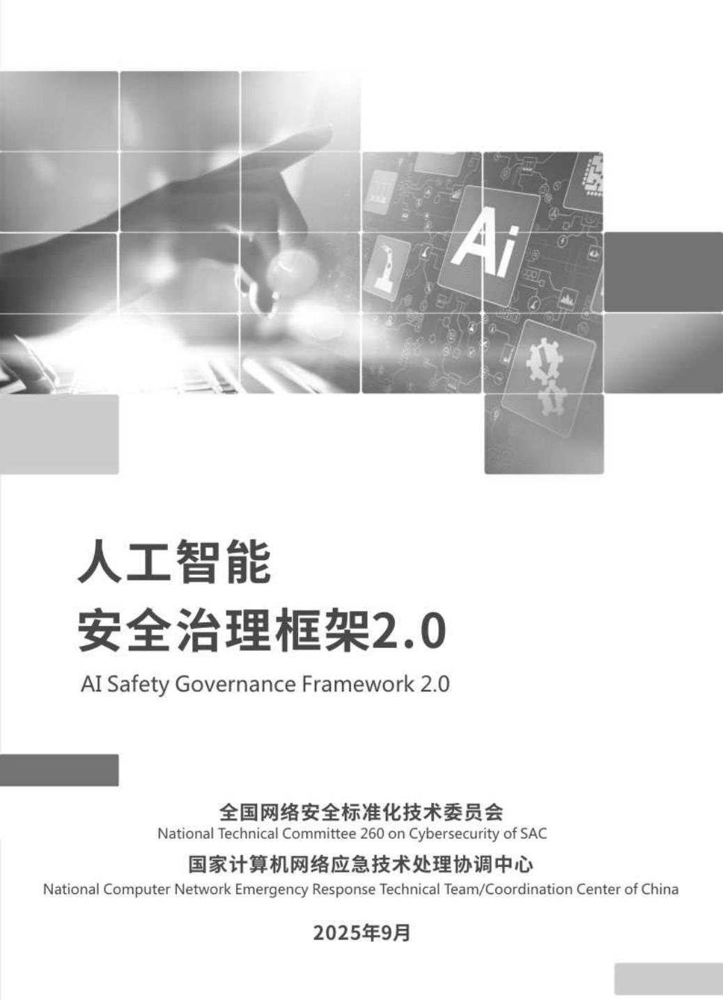
🔍 OCR 识别文字（可能存在识别误差，以原图为准）
Ai
人工智能
安全治理框架2.0
AISafetyGovernanceFramework2.0
全国网络安全标准化技术委员会
National TechnicalCommittee260onCybersecurityofSAC
国家计算机网络应急技术处理协调中心
National Computer Network EmergencyResponseTechnical Team/Coordination Centerof China
2025年9月
第 2 页 / 共 92 页原图 1038×1435

🔍 OCR 识别文字（可能存在识别误差，以原图为准）
（本页未识别到文字，可能为纯图片/空白页）
第 3 页 / 共 92 页原图 1038×1435
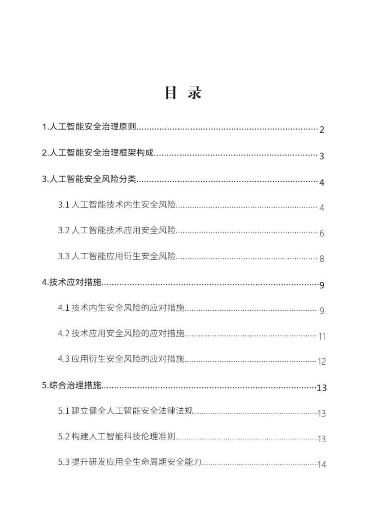
🔍 OCR 识别文字（可能存在识别误差，以原图为准）
目录
1.人工智能安全治理原则
2.人工智能安全治理框架构成
3.人工智能安全风险分类
3.1人工智能技术内生安全风险
3.2人工智能技术应用安全风险
3.3人工智能应用衍生安全风险
4.技术应对措施.
4.1技术内生安全风险的应对措施
4.2技术应用安全风险的应对措施
4.3应用衍生安全风险的应对措施
12
5.综合治理措施
-13
5.1建立健全人工智能安全法律法规
13
5.2构建人工智能科技伦理准则
13
5.3提升研发应用全生命周期安全能力
14
第 4 页 / 共 92 页原图 1038×1435
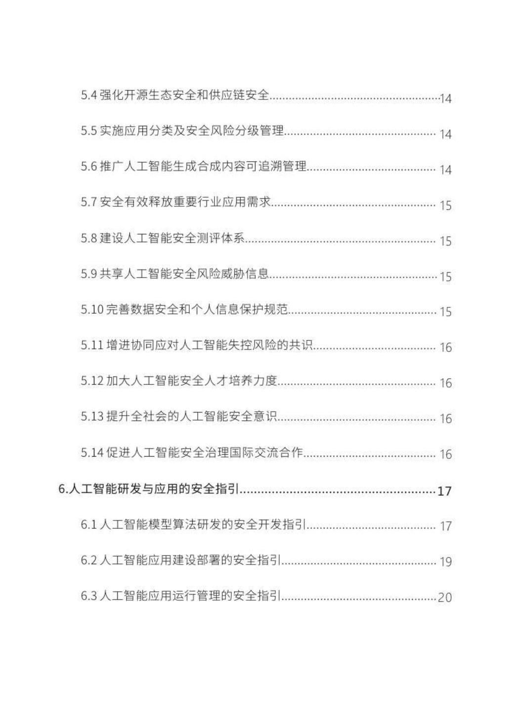
🔍 OCR 识别文字（可能存在识别误差，以原图为准）
5.4强化开源生态安全和供应链安全
14
5.5实施应用分类及安全风险分级管理
14
5.6推广人工智能生成合成内容可追溯管理
14
5.7安全有效释放重要行业应用需求
15
5.8建设人工智能安全测评体系
15
5.9共享人工智能安全风险威胁信息
15
5.10完善数据安全和个人信息保护规范
15
5.11增进协同应对人工智能失控风险的共识
16
5.12加大人工智能安全人才培养力度
16
5.13提升全社会的人工智能安全意识
16
5.14促进人工智能安全治理国际交流合作
16
6.人工智能研发与应用的安全指引
17
6.1人工智能模型算法研发的安全开发指引
17
6.2人工智能应用建设部署的安全指引
19
6.3人工智能应用运行管理的安全指引
20
第 5 页 / 共 92 页原图 1038×1435
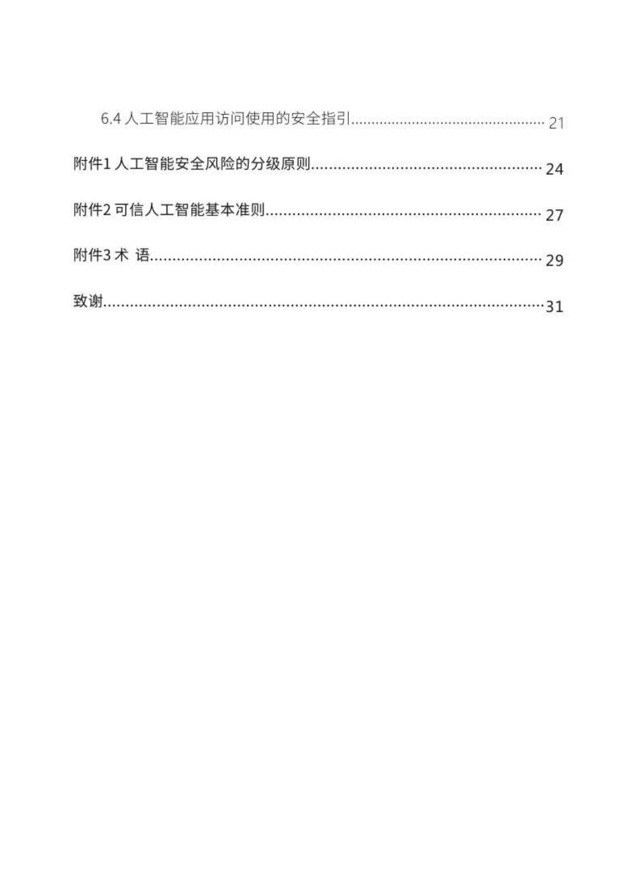
🔍 OCR 识别文字（可能存在识别误差，以原图为准）
6.4人工智能应用访问使用的安全指引
21
附件1人工智能安全风险的分级原则
24
附件2可信人工智能基本准则，
27
附件3术语.
29
致谢.
31
第 6 页 / 共 92 页原图 1038×1435
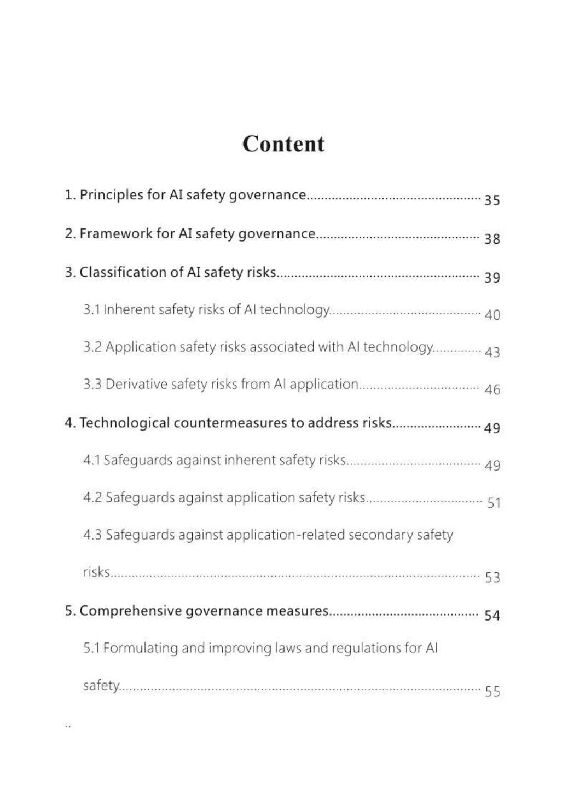
🔍 OCR 识别文字（可能存在识别误差，以原图为准）
Content
1.PrinciplesforAI safety governance..
35
2.FrameworkforAI safetygovernance..
38
3.ClassificationofAI safety risks.
39
3.1 Inherent safetyrisks ofAltechnology.
40
3.2Application safety risks associated with Altechnology.
43
3.3DerivativesafetyrisksfromAlapplication.
46
4.Technological countermeasuresto addressrisks.
49
4.1Safeguards against inherent safetyrisks.
49
4.2Safeguards againstapplicationsafetyrisks
51
4.3 Safeguards against application-related secondary safety
risks.
53
5.Comprehensivegovernancemeasures.
54
5.1Formulatingand improving laws and regulationsfor Al
safety..
55
第 7 页 / 共 92 页原图 1038×1435
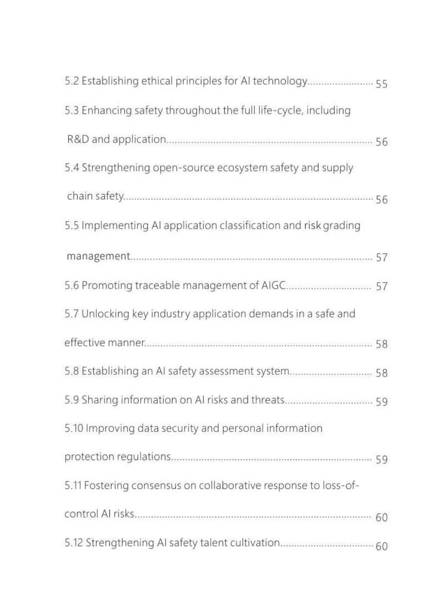
🔍 OCR 识别文字（可能存在识别误差，以原图为准）
5.2Establishing ethical principles forAltechnology
55
5.3Enhancing safetythroughoutthefull life-cycleincluding
R&Dandapplication.
56
5.4Strengthening open-sourceecosystemsafety and supply
chain safety.
56
5.5ImplementingAlapplicationclassificationandriskgrading
management.
5.6PromotingtraceablemanagementofAIGC
57
5.7 Unlockingkey industryapplication demands in a safe and
effectivemanner..
58
5.8EstablishinganAlsafetyassessment system
58
5.9 Sharing informationonAlrisksandthreats
59
5.10 Improving data security and personal information
protectionregulations,
59
5.11Fostering consensuson collaborativeresponse to loss-of-
controlAlrisks
60
5.12 Strengthening Al safety talent cultivation.
60
第 8 页 / 共 92 页原图 1038×1435
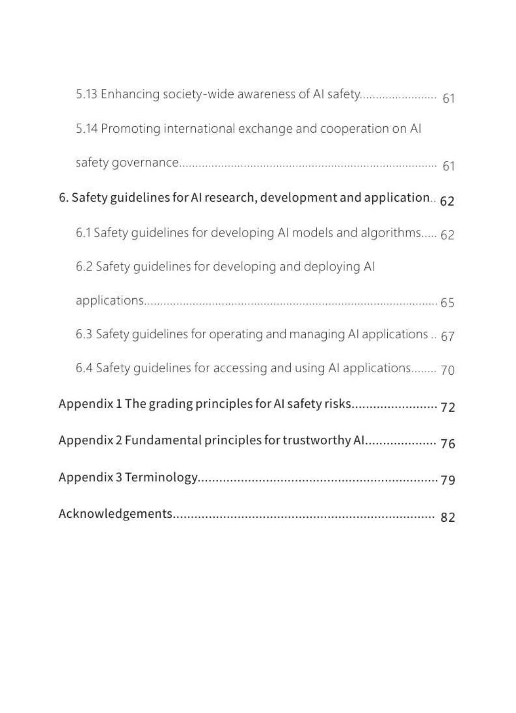
🔍 OCR 识别文字（可能存在识别误差，以原图为准）
5.13Enhancing society-wideawareness ofAl safety.
61
5.14Promoting international exchangeand cooperationonAl
safetygovernance..
61
6.Safety guidelinesforAlresearch, developmentand application..62
6.1Safetyguidelines fordevelopingAlmodels and algorithms.... 62
6.2Safetyguidelines fordeveloping and deployingAl
applications.
65
6.3SafetyguidelinesforoperatingandmanagingAlapplications..67
6.4SafetyguidelinesforaccessingandusingAlapplications...70
Appendix1ThegradingprinciplesforAlsafetyrisks.
72
Appendix2FundamentalprinciplesfortrustworthyAl.
76
Appendix3Terminology..
79
Acknowledgements...
82
第 9 页 / 共 92 页原图 1038×1435
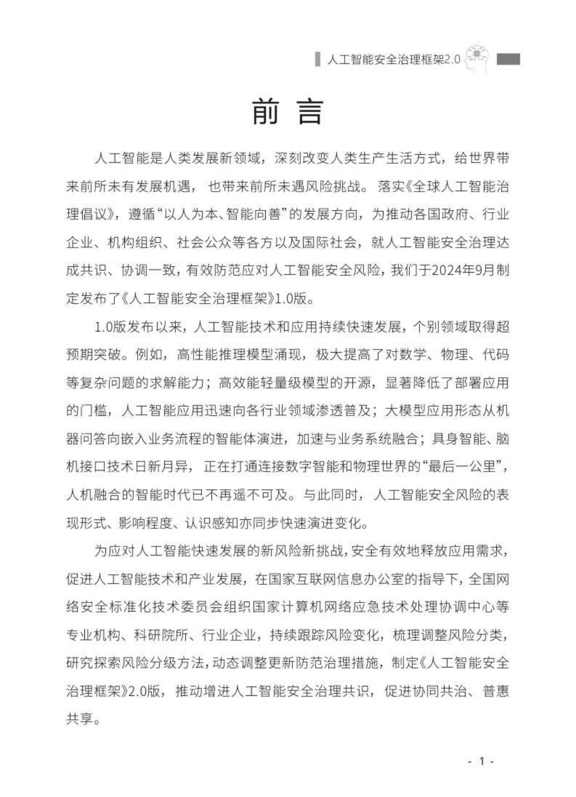
🔍 OCR 识别文字（可能存在识别误差，以原图为准）
人工智能安全治理框架2.0
前言
人工智能是人类发展新领域，深刻改变人类生产生活方式，给世界带
来前所未有发展机遇，也带来前所未遇风险挑战。落实《全球人工智能治
理倡议》，遵循“以人为本、智能向善”的发展方向，为推动各国政府、行业
企业、机构组织、社会公众等各方以及国际社会，就人工智能安全治理达
成共识、协调一致，有效防范应对人工智能安全风险，我们于2024年9月制
定发布了《人工智能安全治理框架》1.0版。
1.0版发布以来，人工智能技术和应用持续快速发展，个别领域取得超
预期突破。例如，高性能推理模型涌现，极大提高了对数学、物理、代码
等复杂问题的求解能力，高效能轻量级模型的开源，显著降低了部署应用
的门槛，人工智能应用迅速向各行业领域渗透普及；大模型应用形态从机
器问答向嵌入业务流程的智能体演进，加速与业务系统融合；具身智能、脑
机接口技术日新月异，正在打通连接数字智能和物理世界的“最后一公里”，
人机融合的智能时代已不再遥不可及。与此同时，人工智能安全风险的表
现形式影响程度、认识感知亦同步快速演进变化。
为应对人工智能快速发展的新风险新挑战，安全有效地释放应用需求，
促进人工智能技术和产业发展，在国家互联网信息办公室的指导下，全国网
络安全标准化技术委员会组织国家计算机网络应急技术处理协调中心等
专业机构、科研院所、行业企业，持续跟踪风险变化，梳理调整风险分类，
研究探索风险分级方法，动态调整更新防范治理措施，制定《人工智能安全
治理框架》2.0版，推动增进人工智能安全治理共识，促进协同共治、普惠
共享。
第 10 页 / 共 92 页原图 1038×1435
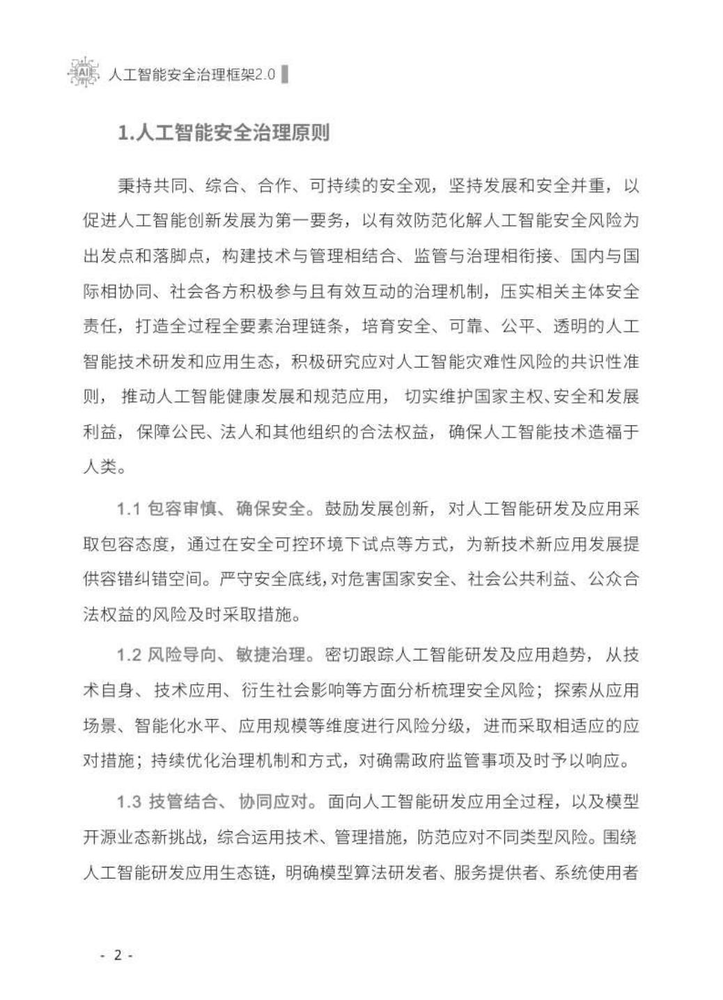
🔍 OCR 识别文字（可能存在识别误差，以原图为准）
人工智能安全治理框架2.0
1.人工智能安全治理原则
秉持共同、综合、合作、可持续的安全观，坚持发展和安全并重，以
促进人工智能创新发展为第一要务，以有效防范化解人工智能安全风险为
出发点和落脚点，构建技术与管理相结合、监管与治理相街接、国内与国
际相协同、社会各方积极参与且有效互动的治理机制，压实相关主体安全
责任，打造全过程全要素治理链条，培育安全、可靠、公平、透明的人工
智能技术研发和应用生态，积极研究应对人工智能灾难性风险的共识性准
则，推动人工智能健康发展和规范应用，切实维护国家主权、安全和发展
利益，保障公民、法人和其他组织的合法权益，确保人工智能技术造福于
人类。
1.1包容审慎、确保安全。鼓励发展创新，对人工智能研发及应用采
取包容态度，通过在安全可控环境下试点等方式，为新技术新应用发展提
供容错纠错空间。严守安全底线，对危害国家安全、社会公共利益、公众合
法权益的风险及时采取措施。
1.2风险导向、敏捷治理。密切跟踪人工智能研发及应用趋势，从技
术自身、技术应用、衍生社会影响等方面分析梳理安全风险；探索从应用
场景、智能化水平、应用规模等维度进行风险分级，进而采取相适应的应
对措施；持续优化治理机制和方式，对确需政府监管事项及时予以响应。
1.3技管结合、协同应对。面向人工智能研发应用全过程，以及模型
开源业态新挑战，综合运用技术、管理措施，防范应对不同类型风险。围绕
人工智能研发应用生态链，明确模型算法研发者、服务提供者、系统使用者
·2-
第 11 页 / 共 92 页原图 1038×1435
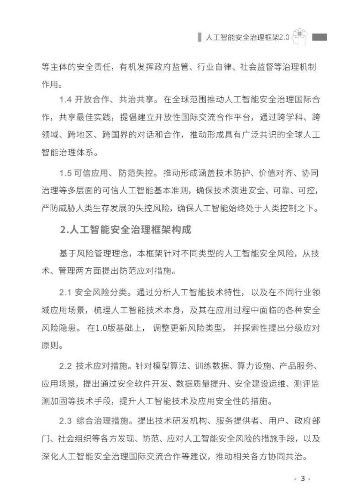
🔍 OCR 识别文字（可能存在识别误差，以原图为准）
人工智能安全治理框架2.0
等主体的安全责任，有机发挥政府监管、行业自律、社会监督等治理机制
作用。
1.4开放合作、共治共享。在全球范围推动人工智能安全治理国际合
作，共享最佳实践，提倡建立开放性国际交流合作平台，通过跨学科、跨
领域、跨地区、跨国界的对话和合作，推动形成具有广泛共识的全球人工
智能治理体系。
1.5可信应用、防范失控。推动形成涵盖技术防护、价值对齐、协同
治理等多层面的可信人工智能基本准则，确保技术演进安全、可靠、可控，
严防威胁人类生存发展的失控风险，确保人工智能始终处于人类控制之下。
2.人工智能安全治理框架构成
基于风险管理理念，本框架针对不同类型的人工智能安全风险，从技
术、管理两方面提出防范应对措施。
2.1安全风险分类。通过分析人工智能技术特性，以及在不同行业领
域应用场景，梳理人工智能技术本身，及其在应用过程中面临的各种安全
风险隐患。在1.0版基础上，调整更新风险类型，并探索性提出分级应对
原则。
2.2技术应对措施。针对模型算法、训练数据、算力设施、产品服务、
应用场景，提出通过安全软件开发、数据质量提升、安全建设运维、测评监
测加固等技术手段，提升人工智能技术及应用安全性的措施。
2.3综合治理措施。提出技术研发机构、服务提供者、用户、政府部
门、社会组织等各方发现、防范、应对人工智能安全风险的措施手段，以及
深化人工智能安全治理国际交流合作等建议，推动相关各方协同共治。
第 12 页 / 共 92 页原图 1038×1435
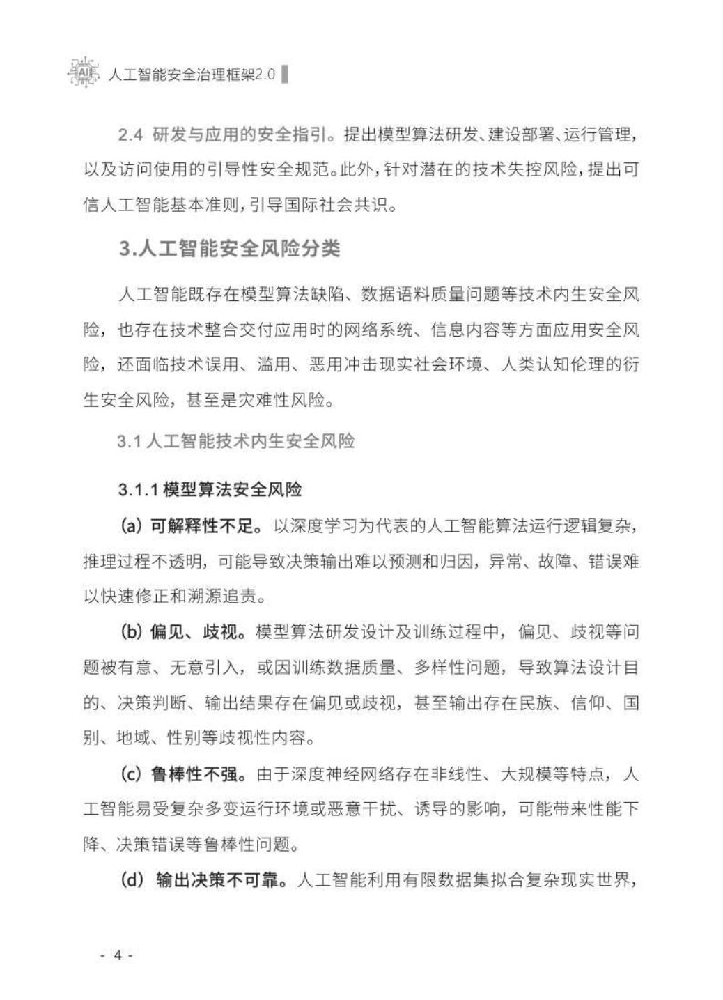
🔍 OCR 识别文字（可能存在识别误差，以原图为准）
人工智能安全治理框架2.0
2.4研发与应用的安全指引。提出模型算法研发、建设部署、运行管理，
以及访问使用的引导性安全规范。此外，针对潜在的技术失控风险，提出可
信人工智能基本准则，引导国际社会共识。
3.人工智能安全风险分类
人工智能既存在模型算法缺陷、数据语料质量问题等技术内生安全风
险，也存在技术整合交付应用时的网络系统、信息内容等方面应用安全风
险，还面临技术误用、监用、恶用冲击现实社会环境、人类认知伦理的衍
生安全风险，甚至是灾难性风险。
3.1人工智能技术内生安全风险
3.1.1模型算法安全风险
（a）可解释性不足。以深度学习为代表的人工智能算法运行逻辑复杂，
推理过程不透明，可能导致决策输出难以预测和归因，异常、故障、错误难
以快速修正和溯源追责。
（b）偏见、歧视。模型算法研发设计及训练过程中，偏见、歧视等问
题被有意、无意引入，或因训练数据质量、多样性问题，导致算法设计自
的、决策判断、输出结果存在偏见或歧视，甚至输出存在民族、信仰、国
别、地域、性别等歧视性内容。
(c）鲁棒性不强。由于深度神经网络存在非线性、大规模等特点，人
工智能易受复杂多变运行环境或恶意干扰、诱导的影响，可能带来性能下
降、决策错误等鲁棒性问题。
（d）输出决策不可靠。人工智能利用有限数据集拟合复杂现实世界，
.4-
第 13 页 / 共 92 页原图 1038×1435
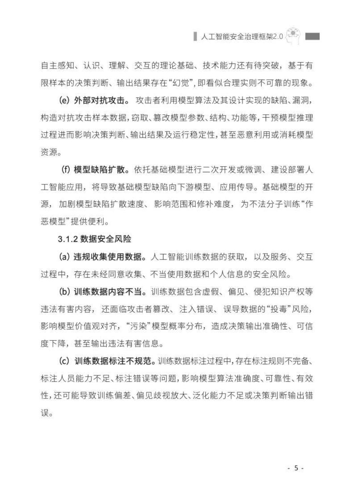
🔍 OCR 识别文字（可能存在识别误差，以原图为准）
人工智能安全治理框架2.0
自主感知、认识、理解、交互的理论基础、技术能力还有待突破，基于有
限样本的决策判断、输出结果存在“幻觉”，即看似合理实则不可靠的现象。
（e）外部对抗攻击。攻击者利用模型算法及其设计实现的缺陷、漏洞，
构造对抗攻击样本数据，窃取、篡改模型参数、结构、功能等，干预模型推理
过程进而影响决策判断、输出结果及运行稳定性，甚至恶意利用或消耗模型
资源。
(f）模型缺陷扩散。依托基础模型进行二次开发或微调、建设部署人
工智能应用，将导致基础模型缺陷向下游模型、应用传导。基础模型的开
源，加剧模型缺陷扩散速度、影响范围和修补难度，为不法分子训练“作
恶模型”提供便利。
3.1.2数据安全风险
a）违规收集使用数据。人工智能训练数据的获取，以及服务、交互
过程中，存在未经同意收集、不当使用数据和个人信息的安全风险。
（b）训练数据内容不当。训练数据包含虚假、偏见、侵犯知识产权等
违法有害内容，还面临攻击者墓改、注入错误、误导数据的“投毒”风险，
影响模型价值观对齐，“污染”模型概率分布，造成决策输出准确性、可信
度下降，甚至输出违法有害信息。
（c）训练数据标注不规范。训练数据标注过程中，存在标注规则不完备、
标注人员能力不足、标注错误等问题，影响模型算法准确度、可靠性、有效
性，还可能导致训练偏差、偏见歧视放大、泛化能力不足或决策判断输出错
误。
第 14 页 / 共 92 页原图 1038×1435
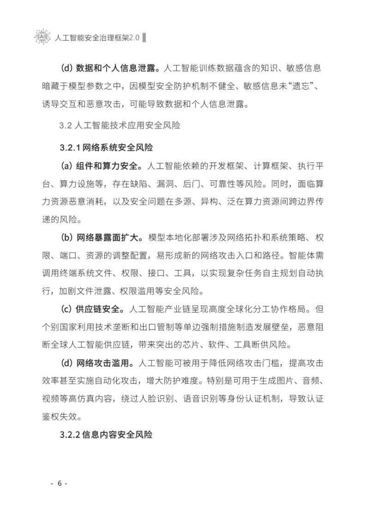
🔍 OCR 识别文字（可能存在识别误差，以原图为准）
人工智能安全治理框架2.0
（d）数据和个人信息泄露。人工智能训练数据蕴含的知识、敏感信息
暗藏于模型参数之中，因模型安全防护机制不健全、敏感信息未“遗忘”
诱导交互和恶意攻击，可能导致数据和个人信息泄露。
3.2人工智能技术应用安全风险
3.2.1网络系统安全风险
（a）组件和算力安全。人工智能依赖的开发框架、计算框架、执行平
台、算力设施等，存在缺陷、漏洞、后门、可靠性等风险。同时，面临算
力资源恶意消耗，以及安全问题在多源、异构、泛在算力资源间跨边界传
递的风险。
（b）网络暴露面扩大。模型本地化部署涉及网络拓扑和系统策路、权
限、端口、资源的调整配置，易形成新的网络攻击入口和路径。智能体需
调用终端系统文件、权限、接口、工具，以实现复杂任务自主规划自动执
行，加剧文件泄露、权限滥用等安全风险。
（c）供应链安全。人工智能产业链呈现高度全球化分工协作格局。但
个别国家利用技术断和出口管制等单边强制措施制造发展壁垒，恶意阻
断全球人工智能供应链，带来突出的芯片、软件、工具断供风险。
(d）网络攻击蓝用。人工智能可被用于降低网络攻击门槛，提高攻击
效率甚至实施自动化攻击，增大防护难度。特别是可用于生成图片、音频、
视频等高仿真内容，绕过人脸识别、语音识别等身份认证机制，导致认证
鉴权失效。
3.2.2信息内容安全风险
.6-
第 15 页 / 共 92 页原图 1038×1435
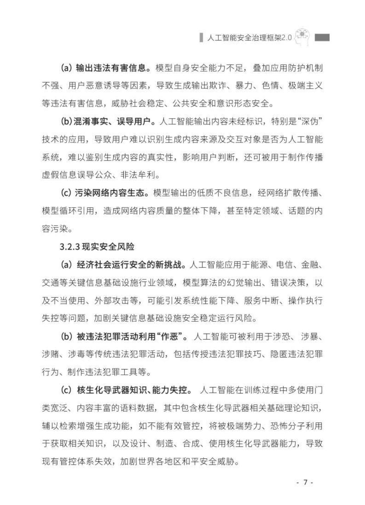
🔍 OCR 识别文字（可能存在识别误差，以原图为准）
人工智能安全治理框架2.0
a）输出违法有害信息。模型自身安全能力不足，叠加应用防护机制
不强、用户恶意诱导等因素，导致生成输出欺诈、暴力、色情、极端主义
等违法有害信息，威社会稳定、公共安全和意识形态安全。
（b）混淆事实、误导用户。人工智能输出内容未经标识，特别是“深伪”
技术的应用，导致用户难以识别生成内容来源及交互对象是否为人工智能
系统，难以鉴别生成内容的真实性，影响用户判断，还可被用于制作传播
虚假信息误导公众、非法牟利。
（c）污染网络内容生态。模型输出的低质不良信息，经网络扩散传播、
模型循环引用，造成网络内容质量的整体下降，甚至特定领域、话题的内
容污染。
3.2.3现实安全风险
（a）经济社会运行安全的新挑战。人工智能应用于能源、电信、金融、
交通等关键信息基础设施行业领域，模型算法的幻觉输出、错误决策，以
及不当使用、外部攻击等，可能引发系统性能下降、服务中断、操作执行
失控等问题，加剧关键信息基础设施安全稳定运行风险。
（b）被违法犯罪活动利用“作恶”。人工智能可被利用于涉恐、涉暴、
赌、涉毒等传统违法犯罪活动，包括传授违法犯罪技巧、隐诺违法犯罪
行为、制作违法犯罪工具等。
（c）核生化导武器知识、能力失控。人工智能在训练过程中多使用门
类宽泛、内容丰富的语料数据，其中包含核生化导武器相关基础理论知识，
辅以检索增强生成功能，如不能有效管控，将被极端势力、恐分子利用
于获取相关知识，以及设计、制造、合成、使用核生化导武器能力，导致
现有管控体系失效，加剧世界各地区和平安全威胁。
第 16 页 / 共 92 页原图 1038×1435
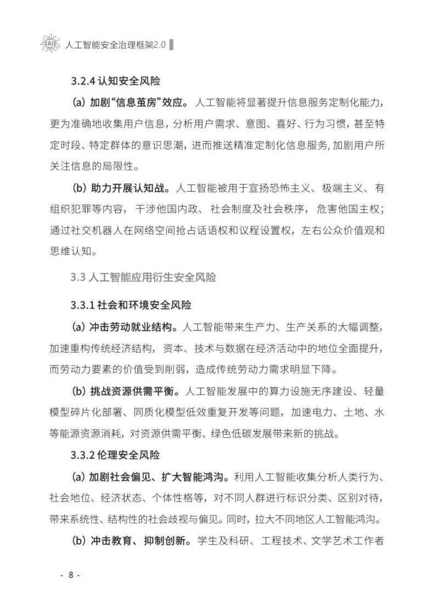
🔍 OCR 识别文字（可能存在识别误差，以原图为准）
人工智能安全治理框架2.0
3.2.4认知安全风险
（a）加剧“信息茧房”效应。人工智能将显著提升信息服务定制化能力，
更为准确地收集用户信息，分析用户需求、意图、喜好、行为习惯，甚至特
定时段、特定群体的意识思潮，进而推送精准定制化信息服务，加剧用户所
关注信息的局限性。
（b）助力开展认知战。人工智能被用于宣扬恐怖主义、极端主义、有
组织犯罪等内容，干涉他国内政、社会制度及社会秩序，危害他国主权；
通过社交机器人在网络空间抢占话语权和议程设置权，左右公众价值观和
思维认知。
3.3人工智能应用行生安全风险
3.3.1社会和环境安全风险
（a）冲击劳动就业结构。人工智能带来生产力、生产关系的大幅调整，
加速重构传统经济结构，资本，技术与数据在经济活动中的地位全面提升，
而劳动力要素的价值受到削弱，造成传统劳动力需求明显下降。
（b）挑战资源供需平衡。人工智能发展中的算力设施无序建设、轻量
模型碎片化部署、同质化模型低效重复开发等问题，加速电力、土地、水
等能源资源消耗，对资源供需平衡、绿色低碳发展带来新的挑战。
3.3.2伦理安全风险
（a）加剧社会偏见、扩大智能鸿沟。利用人工智能收集分析人类行为、
社会地位、经济状态、个体性格等，对不同人群进行标识分类、区别对待，
带来系统性、结构性的社会歧视与偏见。同时，拉大不同地区人工智能鸿沟。
（b）冲击教育、抑制创新。学生及科研、工程技术、文学艺术工作者
.8-
第 17 页 / 共 92 页原图 1038×1435
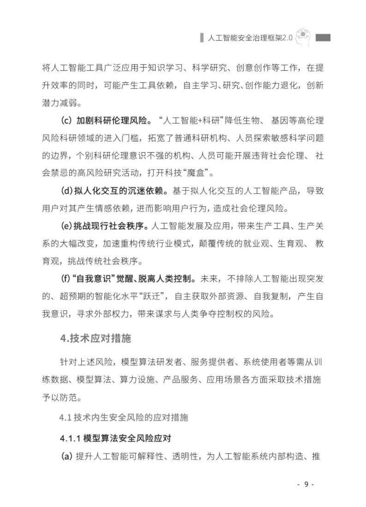
🔍 OCR 识别文字（可能存在识别误差，以原图为准）
人工智能安全治理框架2.0
将人工智能工具广泛应用于知识学习、科学研究、创意创作等工作，在提
升效率的同时，可能产生工具依赖，自主学习、研究、创作能力退化，创新
潜力减弱。
(c）加剧科研伦理风险。“人工智能+科研”降低生物、基因等高伦理
风险科研领域的进入门槛，拓宽了普通科研机构、人员探索敏感科学问题
的边界，个别科研伦理意识不强的机构、人员可能开展违背社会伦理、社
会禁忌的高风险研究活动，打开科技“魔盒”。
（d）拟人化交互的沉迷依赖。基于拟人化交互的人工智能产品，导致
用户对其产生情感依赖，进而影响用户行为，造成社会伦理风险。
e）挑战现行社会秩序。人工智能发展及应用，带来生产工具、生产关
系的大幅改变，加速重构传统行业模式，颠覆传统的就业观、生育观、教
育观，挑战传统社会秩序。
（f）“自我意识”觉醒、脱离人类控制。未来，不排除人工智能出现突发
的、超预期的智能化水平“跃迁”，自主获取外部资源、自我复制，产生自
我意识，寻求外部权力，带来谋求与人类争夺控制权的风险。
4.技术应对措施
针对上述风险，模型算法研发者、服务提供者、系统使用者等需从训
练数据、模型算法、算力设施、产品服务、应用场景各方面采取技术措施
予以防范。
4.1技术内生安全风险的应对措施
4.1.1模型算法安全风险应对
（a）提升人工智能可解释性、透明性，为人工智能系统内部构造、推
.9-
第 18 页 / 共 92 页原图 1038×1435
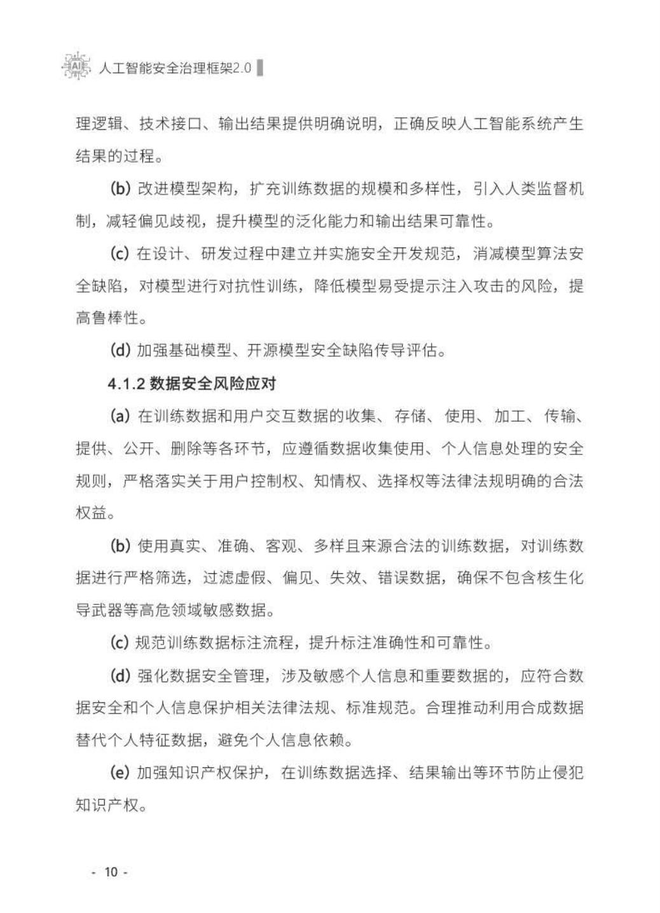
🔍 OCR 识别文字（可能存在识别误差，以原图为准）
人工智能安全治理框架2.0
理逻辑、技术接口、输出结果提供明确说明，正确反映人工智能系统产生
结果的过程。
（b）改进模型架构，扩充训练数据的规模和多样性，引入人类监督机
制，减轻偏见歧视，提升模型的泛化能力和输出结果可靠性。
（C）在设计、研发过程中建立并实施安全开发规范，消减模型算法安
全缺陷，对模型进行对抗性训练，降低模型易受提示注入攻击的风险，提
高鲁棒性。
（d）加强基础模型、开源模型安全缺陷传导评估。
4.1.2数据安全风险应对
（a）在训练数据和用户交互数据的收集、存储、使用、加工、传输、
提供、公开、删除等客环节，应遵循数据收集使用、个人信息处理的安全
规则，严格落实关于用户控制权、知情权、选择权等法律法规明确的合法
权益。
（b）使用真实、准确、客观、多样且来源合法的训练数据，对训练数
据进行严格筛选，过滤虚假、偏见、失效、错误数据，确保不包含核生化
导武器等高危领域敏感数据。
（C）规范训练数据标注流程，提升标注准确性和可靠性。
（d）强化数据安全管理，涉及敏感个人信息和重要数据的，应符合数
据安全和个人信息保护相关法律法规、标准规范。合理推动利用合成数据
替代个人特征数据，避免个人信息依赖。
（e）加强知识产权保护，在训练数据选择、结果输出等环节防止侵犯
知识产权。
.10-
第 19 页 / 共 92 页原图 1038×1435
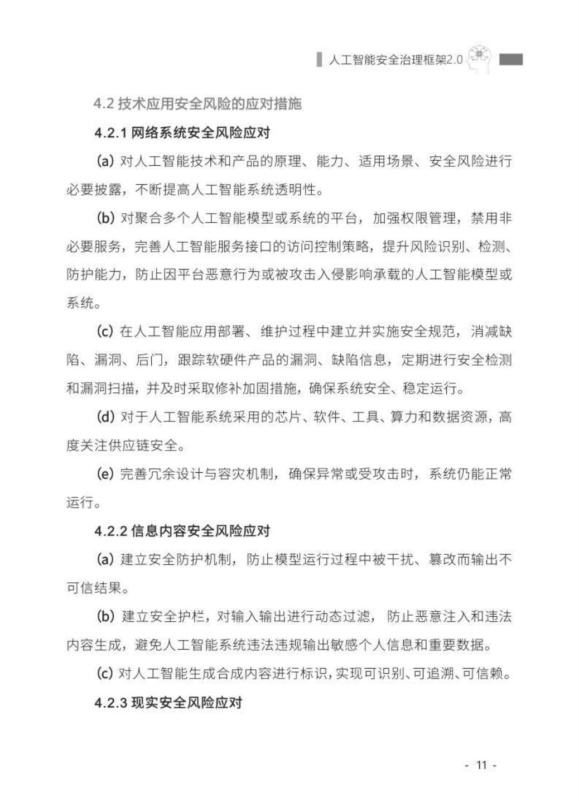
🔍 OCR 识别文字（可能存在识别误差，以原图为准）
人工智能安全治理框架2.0
4.2技术应用安全风险的应对措施
4.2.1网络系统安全风险应对
（a）对人工智能技术和产品的原理、能力、适用场景、安全风险进行
必要披露，不断提高人工智能系统透明性。
（b）对聚合多个人工智能模型或系统的平台，加强权限管理，禁用非
必要服务，完善人工智能服务接口的访问控制策略，提升风险识别、检测、
防护能力，防止因平台恶意行为或被攻击入侵影响承载的人工智能模型或
系统。
（c）在人工智能应用部署、维护过程中建立并实施安全规范，消减缺
陷、漏洞、后门，跟踪软硬件产品的漏洞、缺陷信息，定期进行安全检测
和漏洞扫描，并及时采取修补加固措施，确保系统安全、稳定运行。
（d）对于人工智能系统采用的芯片、软件、工具、算力和数据资源，高
度关注供应链安全。
（e）完善亢余设计与容灾机制，确保异常或受攻击时，系统仍能正常
运行。
4.2.2信息内容安全风险应对
（a）建立安全防护机制，防止模型运行过程中被干扰、篡改而输出不
可信结果。
（b）建立安全护栏，对输入输出进行动态过滤，防止恶意注入和违法
内容生成，避免人工智能系统违法违规输出敏感个人信息和重要数据。
（c）对人工智能生成合成内容进行标识，实现可识别、可追溯、可信赖。
4.2.3现实安全风险应对
-11
第 20 页 / 共 92 页原图 1038×1435
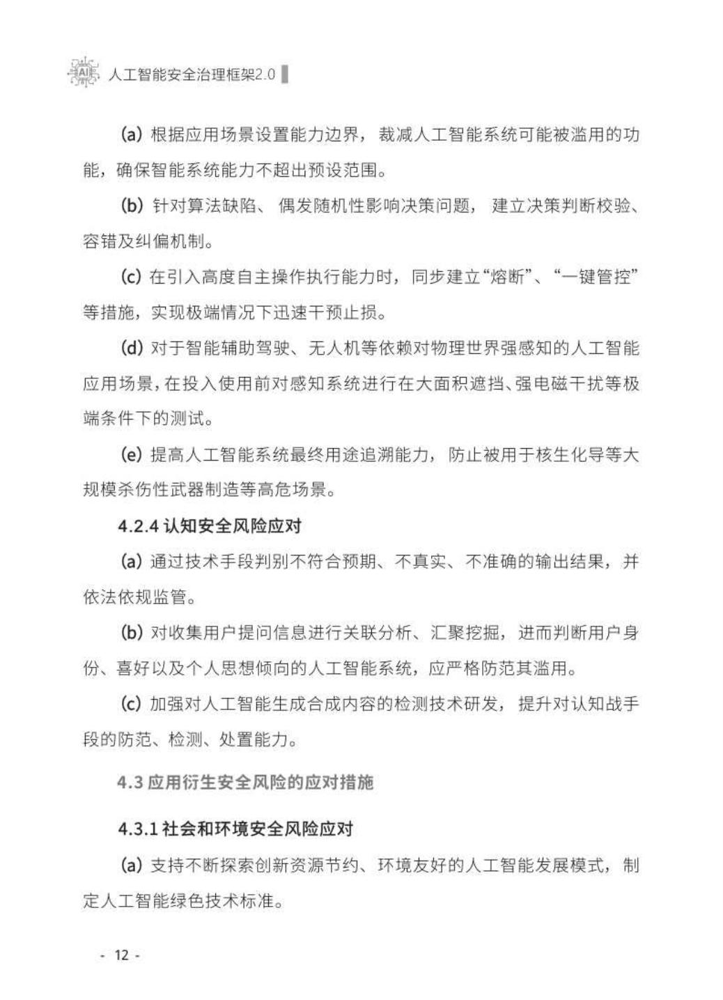
🔍 OCR 识别文字（可能存在识别误差，以原图为准）
人工智能安全治理框架2.0
（a）根据应用场景设置能力边界，裁减人工智能系统可能被滥用的功
能，确保智能系统能力不超出预设范围。
(b）针对算法缺陷、偶发随机性影响决策问题，建立决策判断校验、
容错及纠偏机制。
（c）在引入高度自主操作执行能力时，同步建立“熔断”、“一键管控”
等措施，实现极端情况下迅速干预止损。
（d）对于智能辅助驾驶、无人机等依赖对物理世界强感知的人工智能
应用场景，在投入使用前对感知系统进行在大面积遮挡、强电磁干扰等极
端条件下的测试。
（e）提高人工智能系统最终用途追溯能力，防止被用于核生化导等大
规模杀伤性武器制造等高危场景。
4.2.4认知安全风险应对
（a）通过技术手段判别不符合预期、不真实、不准确的输出结果，并
依法依规监管。
（b）对收集用户提问信息进行关联分析、汇聚挖掘，进而判断用户身
份、喜好以及个人思想倾向的人工智能系统，应严格防范其滥用。
（c）加强对人工智能生成合成内容的检测技术研发，提升对认知战手
段的防范、检测、处置能力。
4.3应用衍生安全风险的应对措施
4.3.1社会和环境安全风险应对
（a）支持不断探索创新资源节约、环境友好的人工智能发展模式，制
定人工智能绿色技术标准。
.12-
第 21 页 / 共 92 页原图 1038×1435
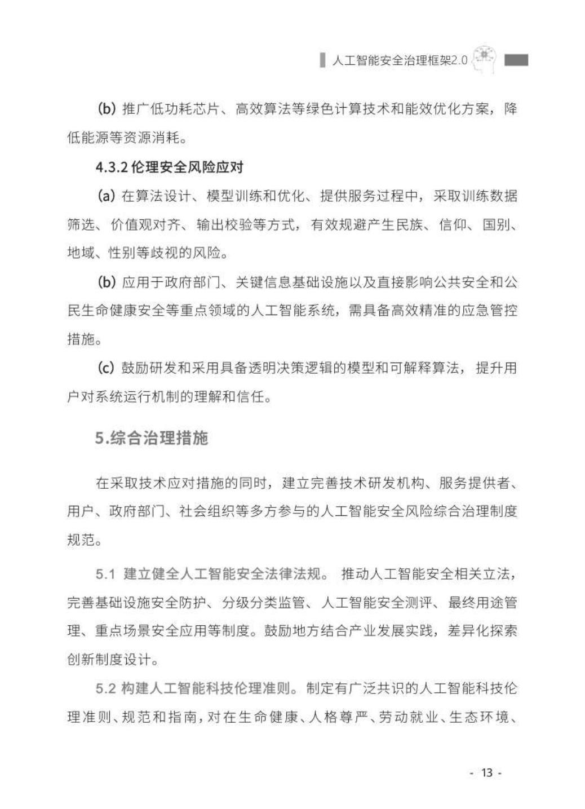
🔍 OCR 识别文字（可能存在识别误差，以原图为准）
人工智能安全治理框架2.0
（b）推广低功耗芯片、高效算法等绿色计算技术和能效优化方案，降
低能源等资源消耗。
4.3.2伦理安全风险应对
a）在算法设计、模型训练和优化、提供服务过程中，采取训练数据
筛选、价值观对齐、输出校验等方式，有效规避产生民族、信仰、国别、
地域、性别等歧视的风险。
b）应用于政府部门、关键信息基础设施以及直接影响公共安全和公
民生命健康安全等重点领域的人工智能系统，需具备高效精准的应急管控
措施。
（C）鼓励研发和采用具备透明决策逻辑的模型和可解释算法，提升用
户对系统运行机制的理解和信任。
5.综合治理措施
在采取技术应对措施的同时，建立完善技术研发机构、服务提供者、
用户、政府部门、社会组织等多方参与的人工智能安全风险综合治理制度
规范。
5.1建立健全人工智能安全法律法规。推动人工智能安全相关立法，
完善基础设施安全防护、分级分类监管、人工智能安全测评、最终用途管
理、重点场景安全应用等制度。鼓励地方结合产业发展实践，差异化探索
创新制度设计。
5.2构建人工智能科技伦理准则。制定有广泛共识的人工智能科技伦
理准则、规范和指南，对在生命健康、人格尊严、劳动就业、生态环境、
-13-
第 22 页 / 共 92 页原图 1038×1435
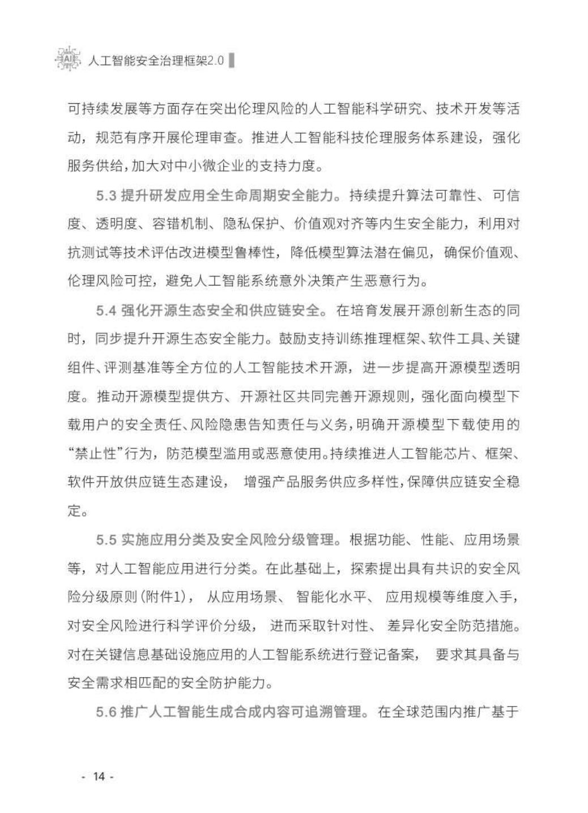
🔍 OCR 识别文字（可能存在识别误差，以原图为准）
人工智能安全治理框架2.0
可持续发展等方面存在突出伦理风险的人工智能科学研究、技术开发等活
动，规范有序开展伦理审查。推进人工智能科技伦理服务体系建设，强化
服务供给，加大对中小微企业的支持力度。
5.3提升研发应用全生命周期安全能力。持续提升算法可靠性、可信
度、透明度、容错机制、隐私保护、价值观对齐等内生安全能力，利用对
抗测试等技术评估改进模型鲁棒性，降低模型算法潜在偏见，确保价值观、
伦理风险可控，避免人工智能系统意外决策产生恶意行为。
5.4强化开源生态安全和供应链安全。在培育发展开源创新生态的同
时，同步提升开源生态安全能力。鼓励支持训练推理框架、软件工具、关键
组件、评测基准等全方位的人工智能技术开源，进一步提高开源模型透明
度。推动开源模型提供方、开源社区共同完善开源规则，强化面向模型下
载用户的安全责任、风险隐患告知责任与义务，明确开源模型下载使用的
“禁止性“行为，防范模型滥用或恶意使用。持续推进人工智能芯片、框架、
软件开放供应链生态建设，增强产品服务供应多样性，保障供应链安全稳
定。
5.5实施应用分类及安全风险分级管理。根据功能、性能、应用场景
等，对人工智能应用进行分类。在此基础上，探索提出具有共识的安全风
险分级原则（附件1），从应用场景、智能化水平、应用规模等维度入手，
对安全风险进行科学评价分级，进而采取针对性、差异化安全防范措施。
对在关键信息基础设施应用的人工智能系统进行登记备案，要求其具备与
安全需求相匹配的安全防护能力。
5.6推广人工智能生成合成内容可追溯管理。在全球范围内推广基于
.14-
第 23 页 / 共 92 页原图 1038×1435
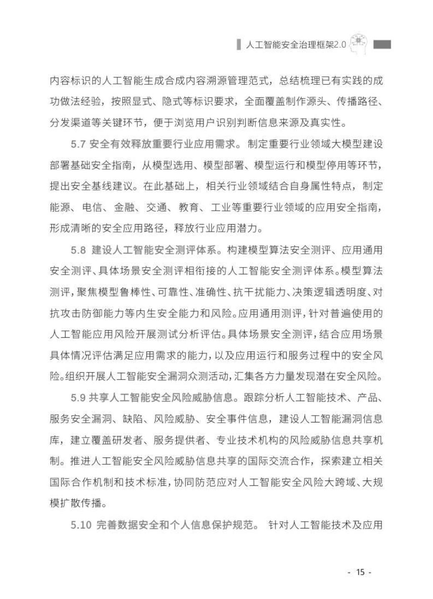
🔍 OCR 识别文字（可能存在识别误差，以原图为准）
人工智能安全治理框架2.0
内容标识的人工智能生成合成内容潮源管理范式，总结梳理已有实践的成
功做法经验，按照显式、隐式等标识要求，全面覆盖制作源头、传播路径、
分发渠道等关键环节，便于浏览用户识别判断信息来源及真实性。
5.7安全有效释放重要行业应用需求。制定重要行业领域大模型建设
部署基础安全指南，从模型选用、模型部署、模型运行和模型停用等环节，
提出安全基线建议。在此基础上，相关行业领域结合自身属性特点，制定
能源、电信、金融、交通、教育、工业等重要行业领域的应用安全指南，
形成清晰的安全应用路径，释放行业应用潜力。
5.8建设人工智能安全测评体系。构建模型算法安全测评、应用通用
安全测评、具体场景安全测评相衔接的人工智能安全测评体系。模型算法
测评，聚焦模型鲁棒性、可靠性、准确性、抗干扰能力、决策逻辑透明度、对
抗攻击防御能力等内生安全能力和风险。应用通用测评，针对普遍使用的
人工智能应用风险开展测试分析评估。具体场景安全测评，结合应用场景
具体情况评估满足应用需求的能力，以及应用运行和服务过程中的安全风
险。组织开展人工智能安全漏洞众测活动，汇集各方力量发现潜在安全风险。
5.9共享人工智能安全风险威胁信息。跟踪分析人工智能技术、产品、
服务安全漏洞、缺陷、风险威胁、安全事件信息，建设人工智能漏洞信息
库，建立覆盖研发者、服务提供者、专业技术机构的风险威胁信息共享机
制。推进人工智能安全风险威胁信息共享的国际交流合作，探索建立相关
国际合作机制和技术标准，协同防范应对人工智能安全风险大跨域、大规
模扩散传播。
5.10完善数据安全和个人信息保护规范。针对人工智能技术及应用
第 24 页 / 共 92 页原图 1038×1435
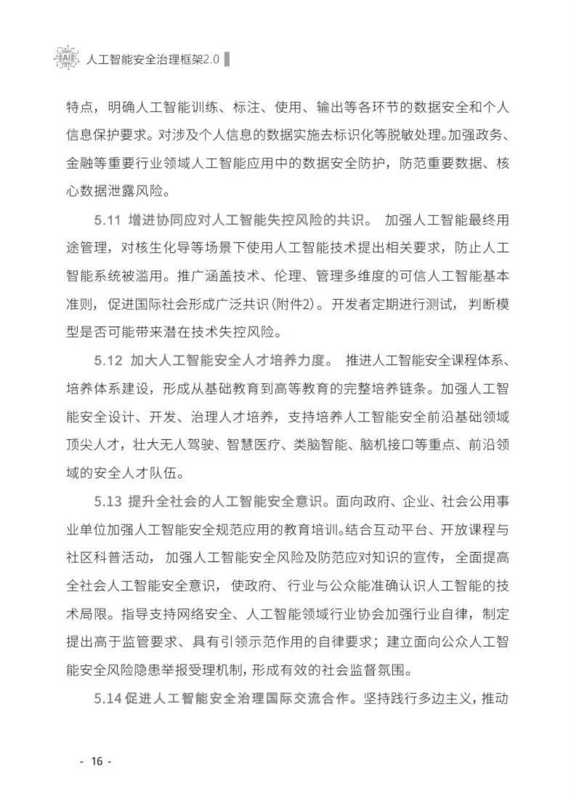
🔍 OCR 识别文字（可能存在识别误差，以原图为准）
人工智能安全治理框架2.0
特点，明确人工智能训练、标注、使用、输出等各环节的数据安全和个人
信息保护要求。对涉及个人信息的数据实施去标识化等脱敏处理。加强政务、
金融等重要行业领域人工智能应用中的数据安全防护，防范重要数据、核
心数据泄露风险。
5.11增进协同应对人工智能失控风险的共识。加强人工智能最终用
途管理，对核生化导等场景下使用人工智能技术提出相关要求，防止人工
智能系统被滥用。推广涵盖技术、伦理、管理多维度的可信人工智能基本
准则，促进国际社会形成广泛共识（附件2）。开发者定期进行测试，判断模
型是否可能带来潜在技术失控风险。
5.12加大人工智能安全人才培养力度。推进人工智能安全课程体系、
培养体系建设，形成从基础教育到高等教育的完整培养链条。加强人工智
能安全设计、开发、治理人才培养，支持培养人工智能安全前沿基础领域
顶尖人才，狂大无人驾驶、智慧医疗、类脑智能、脑机接口等重点、前沿领
域的安全人才队伍。
5.13提升全社会的人工智能安全意识。面向政府、企业、社会公用事
业单位加强人工智能安全规范应用的教育培训结合互动平台、开放课程与
社区科普活动，加强人工智能安全风险及防范应对知识的宣传，全面提高
全社会人工智能安全意识，使政府、行业与公众能准确认识人工智能的技
术局限。指导支持网络安全、人工智能领域行业协会加强行业自律，制定
提出高于监管要求、具有引领示范作用的自律要求；建立面尚公众人工智
能安全风险隐惠举报受理机制，形成有效的社会监督氛围。
5.14促进人工智能安全治理国际交流合作。坚持践行多边主义，推动
·16-
第 25 页 / 共 92 页原图 1038×1435
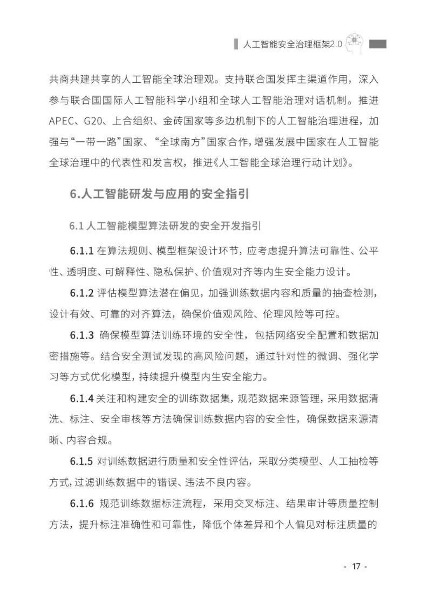
🔍 OCR 识别文字（可能存在识别误差，以原图为准）
人工智能安全治理框架2.0
共商共建共享的人工智能全球治理观。支持联合国发挥主渠道作用，深入
参与联合国国际人工智能科学小组和全球人工智能治理对话机制。推进
APEC、G20、上合组织、金砖国家等多边机制下的人工智能治理进程，加
强与”一带一路”国家、“全球南方”国家合作，增强发展中国家在人工智能
全球治理中的代表性和发言权，推进《人工智能全球治理行动计划》。
6.人工智能研发与应用的安全指引
6.1人工智能模型算法研发的安全开发指引
6.1.1在算法规则、模型框架设计环节，应考虑提升算法可靠性、公平
性、透明度、可解释性、隐私保护、价值观对齐等内生安全能力设计。
6.1.2评估模型算法潜在偏见，加强训练数据内容和质量的抽查检测，
设计有效、可靠的对齐算法，确保价值观风险、伦理风险等可控。
6.1.3确保模型算法训练环境的安全性，包括网络安全配置和数据加
密措施等。结合安全测试发现的高风险问题，通过针对性的微调、强化学
习等方式优化模型，持续提升模型内生安全能力。
6.1.4关注和构建安全的训练数据集，规范数据来源管理，采用数据清
洗、标注安全审核等方法确保训练数据内容的安全性，确保数据来源清
晰、内容合规。
6.1.5对训练数据进行质量和安全性评估，采取分类模型、人工抽检等
方式，过滤训练数据中的错误、违法不良内容。
6.1.6规范训练数据标注流程，采用交叉标注、结果审计等质量控制
方法，提升标注准确性和可靠性，降低个体差异和个人偏见对标注质量的
第 26 页 / 共 92 页原图 1038×1435
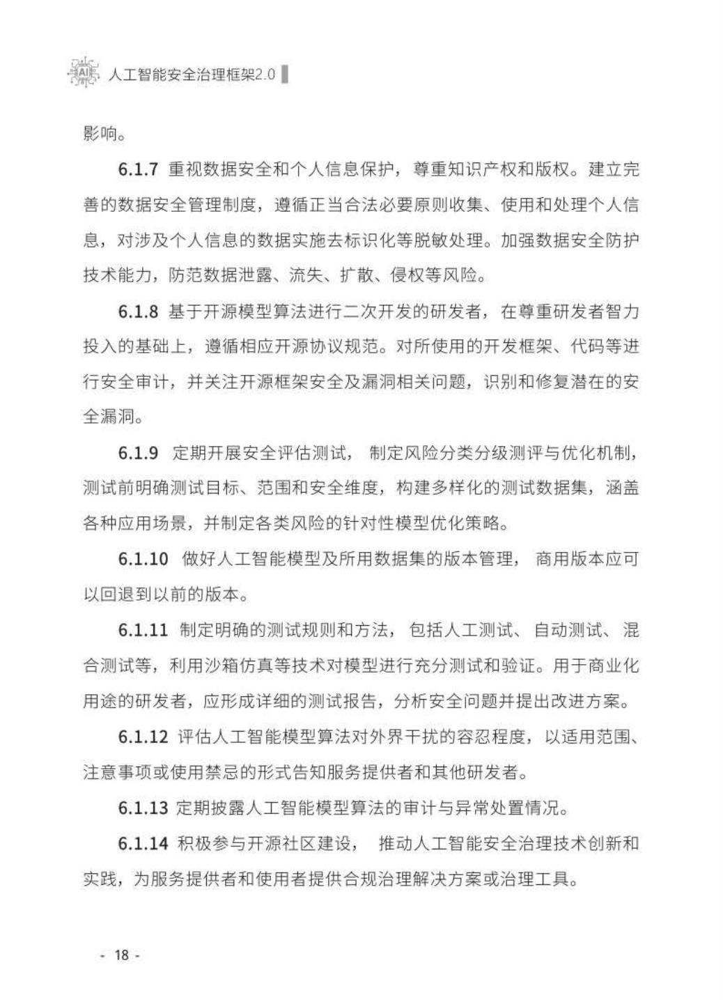
🔍 OCR 识别文字（可能存在识别误差，以原图为准）
人工智能安全治理框架2.0
影响。
6.1.7重视数据安全和个人信息保护，尊重知识产权和版权。建立完
善的数据安全管理制度，遵循正当合法必要原则收集、使用和处理个人信
息，对涉及个人信息的数据实施去标识化等脱敏处理。加强数据安全防护
技术能力，防范数据泄露、流失、扩散、侵权等风险。
6.1.8基于开源模型算法进行二次开发的研发者，在尊重研发者智力
投入的基础上，遵循相应开源协议规范。对所使用的开发框架、代码等进
行安全审计，并关注开源框架安全及漏洞相关问题，识别和修复潜在的安
全漏洞。
6.1.9定期开展安全评估测试，制定风险分类分级测评与优化机制，
测试前明确测试目标、范围和安全维度，构建多样化的测试数据集，涵盖
各种应用场景，并制定各类风险的针对性模型优化策略。
6.1.10做好人工智能模型及所用数据集的版本管理，商用版本应可
以回退到以前的版本。
6.1.11制定明确的测试规则和方法，包括人工测试、自动测试、混
合测试等，利用沙箱仿真等技术对模型进行充分测试和验证。用于商业化
用途的研发者，应形成详细的测试报告，分析安全问题并提出改进方案。
6.1.12评估人工智能模型算法对外界干扰的容忍程度，以适用范围、
注意事项或使用禁忌的形式告知服务提供者和其他研发者。
6.1.13定期披露人工智能模型算法的审计与异常处置情况。
6.1.14积极参与开源社区建设，推动人工智能安全治理技术创新和
实践，为服务提供者和使用者提供合规治理解决方案或治理工具。
.18-
第 27 页 / 共 92 页原图 1038×1435
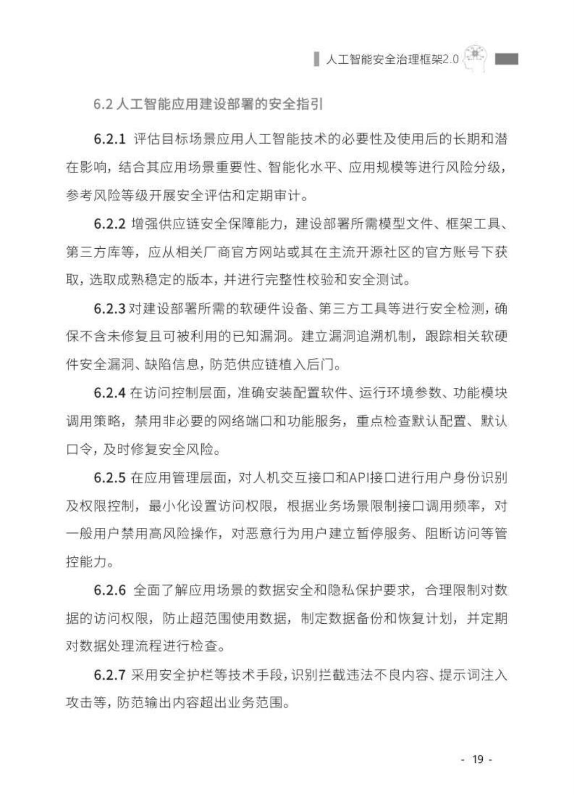
🔍 OCR 识别文字（可能存在识别误差，以原图为准）
人工智能安全治理框架2.0
6.2人工智能应用建设部署的安全指引
6.2.1评估自标场景应用人工智能技术的必要性及使用后的长期和潜
在影响，结合其应用场景重要性、智能化水平、应用规模等进行风险分级，
参考风险等级开展安全评估和定期审计。
6.2.2增强供应链安全保障能力，建设部署所需模型文件、框架工具、
第三方库等，应从相关厂商官方网站或其在主流开源社区的官方账号下获
取，选取成熟稳定的版本，并进行完整性校验和安全测试。
6.2.3对建设部署所需的软硬件设备、第三方工具等进行安全检测，确
保不含未修复且可被利用的已知漏洞。建立漏洞追溯机制，跟踪相关软硬
件安全漏洞、缺陷信息，防范供应链植入后门。
6.2.4在访问控制层面，准确安装配置软件、运行环境参数、功能模块
调用策略，禁用非必要的网络端口和功能服务，重点检查默认配置、默认
口令，及时修复安全风险。
6.2.5在应用管理层面，对人机交互接口和API接口进行用户身份识别
及权限控制，最小化设置访问权限，根据业务场景限制接口调用频率，对
一般用户禁用高风险操作，对恶意行为用户建立暂停服务、阻断访问等管
控能力。
6.2.6全面了解应用场景的数据安全和隐私保护要求，合理限制对数
据的访问权限，防止超范围使用数据，制定数据备份和恢复计划，并定期
对数据处理流程进行检查。
6.2.7采用安全护栏等技术手段，识别拦截违法不良内容、提示词注入
攻击等，防范输出内容超出业务范围。
-19-
第 28 页 / 共 92 页原图 1038×1435
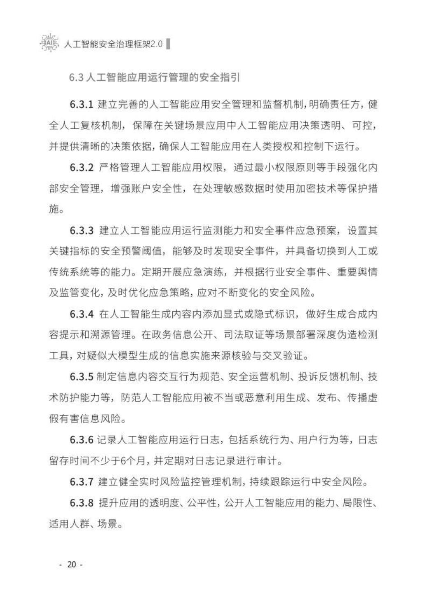
🔍 OCR 识别文字（可能存在识别误差，以原图为准）
人工智能安全治理框架2.0
6.3人工智能应用运行管理的安全指引
6.3.1建立完善的人工智能应用安全管理和监督机制，明确责任方，健
全人工复核机制，保障在关键场景应用中人工智能应用决策透明、可控，
并提供清晰的决策依据，确保人工智能应用在人类授权和控制下运行。
6.3.2严格管理人工智能应用权限，通过最小权限原则等手段强化内
部安全管理，增强账户安全性，在处理敏感数据时使用加密技术等保护措
施。
6.3.3建立人工智能应用运行监测能力和安全事件应急预案，设置其
关键指标的安全预警值，能够及时发现安全事件，并具备切换到人工或
传统系统等的能力。定期开展应急演练，并根据行业安全事件、重要舆情
及监管变化，及时优化应急策略，应对不断变化的安全风险。
6.3.4在人工智能生成内容内添加显式或隐式标识，做好生成合成内
容提示和溯源管理。在政务信息公开、司法取证等场景部署深度伪造检测
工具，对疑似大模型生成的信息实施来源核验与交叉验证。
6.3.5制定信息内容交互行为规范、安全运营机制、投诉反馈机制、技
术防护能力等，防范人工智能应用被不当或恶意利用生成、发布、传播虚
假有害信息风险。
6.3.6记录人工智能应用运行日志，包括系统行为、用户行为等，日志
留存时间不少于6个月，并定期对日志记录进行审计。
6.3.7建立健全实时风险监控管理机制，持续跟踪运行中安全风险。
6.3.8提升应用的透明度、公平性，公开人工智能应用的能力、局限性、
适用人群、场景。
·20-
第 29 页 / 共 92 页原图 1038×1435
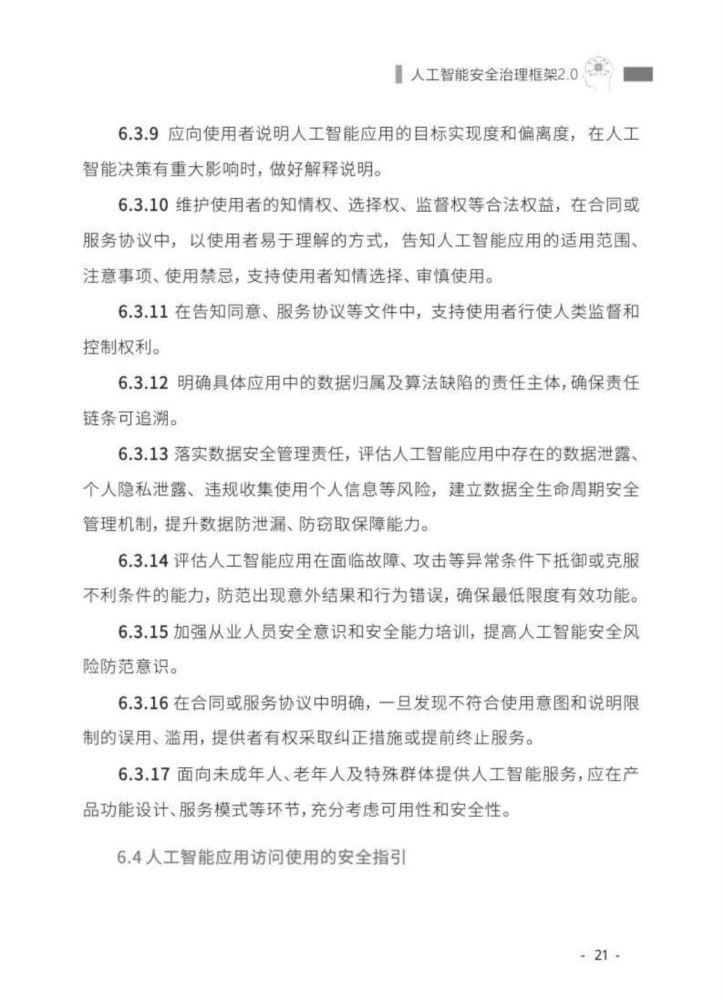
🔍 OCR 识别文字（可能存在识别误差，以原图为准）
人工智能安全治理框架2.0
6.3.9应向使用者说明人工智能应用的自标实现度和偏离度，在人工
智能决策有重大影响时，做好解释说明。
6.3.10维护使用者的知情权、选择权、监督权等合法权益，在合同或
服务协议中，以使用者易于理解的方式，告知人工智能应用的适用范围、
注意事项、使用禁忌，支持使用者知情选择、审慎使用。
6.3.11在告知同意、服务协议等文件中，支持使用者行使人类监督和
控制权利。
6.3.12明确具体应用中的数据归属及算法缺陷的责任主体，确保责任
链条可追溯。
6.3.13落实数据安全管理责任，评估人工智能应用中存在的数据泄露、
个人隐私露、违规收集使用个人信息等风险，建立数据全生命周期安全
管理机制，提升数据防泄漏、防窃取保障能力。
6.3.14评估人工智能应用在面临故障、攻击等异常条件下抵御或克服
不利条件的能力，防范出现意外结果和行为错误，确保最低限度有效功能。
6.3.15加强从业人员安全意识和安全能力培训，提高人工智能安全风
险防范意识。
6.3.16在合同或服务协议中明确，一旦发现不符合使用意图和说明限
制的误用、滥用，提供者有权采取纠正措施或提前终止服务。
6.3.17面向未成年人，老年人及特殊群体提供人工智能服务，应在产
品功能设计、服务模式等环节，充分考虑可用性和安全性。
6.4人工智能应用访问使用的安全指引
-21-
第 30 页 / 共 92 页原图 1038×1435
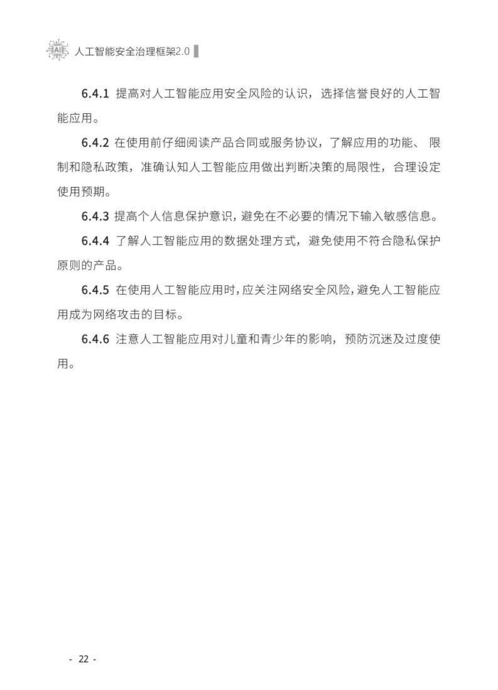
🔍 OCR 识别文字（可能存在识别误差，以原图为准）
人工智能安全治理框架2.0
6.4.1提高对人工智能应用安全风险的认识，选择信誉良好的人工智
能应用。
6.4.2在使用前仔细阅读产品合同或服务协议，了解应用的功能、限
制和隐私政策，准确认知人工智能应用做出判断决策的局限性，合理设定
使用预期。
6.4.3提高个人信息保护意识，避免在不必要的情况下输入敏感信息。
6.4.4了解人工智能应用的数据处理方式，避免使用不符合隐私保护
原则的产品。
6.4.5在使用人工智能应用时，应关注网络安全风险，避免人工智能应
用成为网络攻击的目标。
6.4.6注意人工智能应用对儿童和青少年的影响，预防沉迷及过度使
用。
·22-
第 31 页 / 共 92 页原图 1038×1435
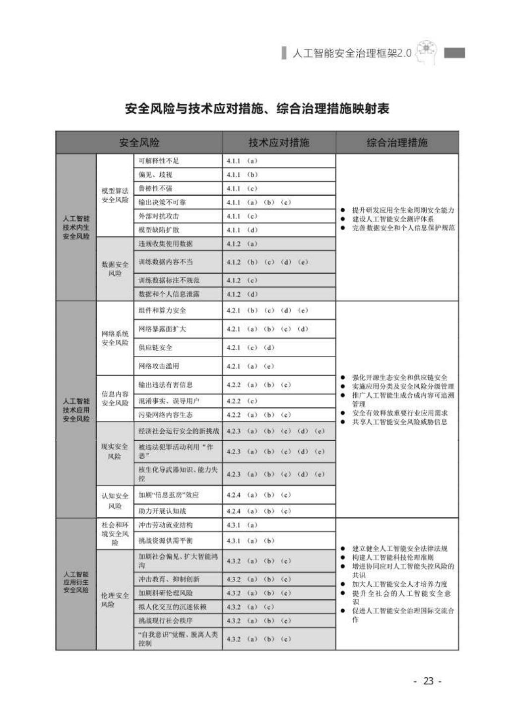
🔍 OCR 识别文字（可能存在识别误差，以原图为准）
人工智能安全治理框架2.0
安全风险与技术应对措施、综合治理措施映射表
安全风险
技术应对措施
综合治理措施
可解释性不足
4.1.1
(a)
偏见、歧视
411
(b)
鲁棒性不强
4.11
模型算法
(c)
安全风险
输出决策不可靠
4.11
(a)(b)(e)
提升研发应用全生命周期安全能力
外部对抗攻击
4.1.1
人工智
(c)
建设人工帮能安全测评体系
技术内生
模型缺陷扩做
4.1.1
(d)
完善数据安全和个人信息保护规范
安全风险
违规收集使用数据
4.12
训练数据内容不当
4.12
(b)
()
(d)
数据安全
(e)
风险
训练数据标注不规范
4.12
数据和个人信息没器
412
(d)
组件和算力安全
4.2.1
(b)
(0)
(d)
(c)
网络聚露面扩大
(b)
(c)
4.2.1
(a)
(d)
阀络系统
安全风险
供应链安全
4.2.1
(c)
(d)
网络攻击溢用
42.1
(a)
(c)
强化开源生态安全和供应链安全
输出违法有害信息
42.2
(b)
(a)
(c)
实施应用分类及安全风险分级管理
信息内容
推广人工智能生成合成内容可追潮
人工智能
混消事实，误导用户
422
安全风险
(c)
管理
技术应用
4.2.2
(c)
污染网络内容生态
(b)
(a)
安全有效释放重要行业应用需求
安全风险
共享人工智能安全风险威估信息
经济社会运行安全的新挑战
42.3
(a)
(9)
(0)
(d)
(0)
现实安全
被违法犯非活动利用“作
423
(a)
(b)
(c)
(d)
风险
恶”
(c)
核生化导武器知识、能力失
4.23
(a)
(d)
(e)
加期信息董房"效应
认知安全
4.2.4
(a)
(b)
(c)
风险
助力开展认知战
42.4
(a)
(b)
社会和环
冲击劳动就业结构
4.3.1
(a)
境安全风
挑战资源供需平衡
4.3.1
(a)
(b)
建立健全人工智能安全法津法规
加剧社会偏见、扩大智能鸿
43.2
(a)
(b)
(0)
构建人工智能科技伦理准则
增进协同应对人工智能失控风险的
冲击教育、抑制创新
432
(a)
(b)
(c)
共识
应用生
加大人工智能安全人才培养力度
安全风险
加刷科研伦理风险
43.2
(b)
伦理安全
提升全社会的人工智能安全意
风险
拟人化交互的沉速依赖
432
a)
促进人工智能安全治理国际交流会
挑战现行社会秩序
432
(a)
(b)
“自我意识”觉醒，脱离人类
43.2
(a)
(6)
控制
(0)
-23-
第 32 页 / 共 92 页原图 1038×1435
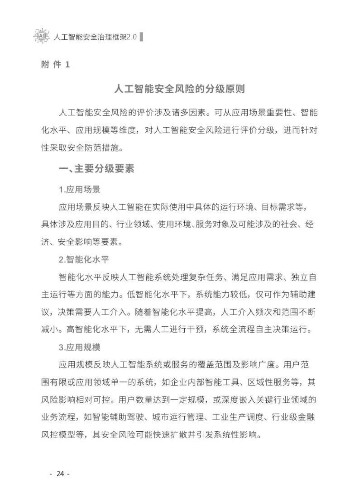
🔍 OCR 识别文字（可能存在识别误差，以原图为准）
人工智能安全治理框架2.0
附件1
人工智能安全风险的分级原则
人工智能安全风险的评价涉及诸多因素。可从应用场景重要性、智能
化水平、应用规模等维度，对人工智能安全风险进行评价分级，进而针对
性采取安全防范措施。
一、主要分级要素
1.应用场景
应用场景反映人工智能在实际使用中具体的运行环境、自标需求等，
具体涉及应用自的、行业领域、使用环境、服务对象及可能及的社会、经
济、安全影响等要素。
2.智能化水平
智能化水平反映人工智能系统处理复杂任务、满足应用需求、独立自
主运行等方面的能力。低智能化水平下，系统能力较低，仅可作为辅助建
议，决策需要人工介入。随着智能化水平提高，人工介入频次和范围不断
减小。高智能化水平下，无需人工进行干预，系统全流程自主决策运行。
3.应用规模
应用规模反映人工智能系统或服务的覆盖范围及影响广度。用户范
围有限或应用领域单一的系统，如企业内部智能工具、区域性服务等，其
风险影响相对可控。用户数量达到一定规模，或深度嵌入关键行业领域的
业务流程，如智能辅助驾驶、城市运行管理、工业生产调度、行业级金融
风控模型等，其安全风险可能快速扩散并引发系统性影响。
·24-
第 33 页 / 共 92 页原图 1038×1435
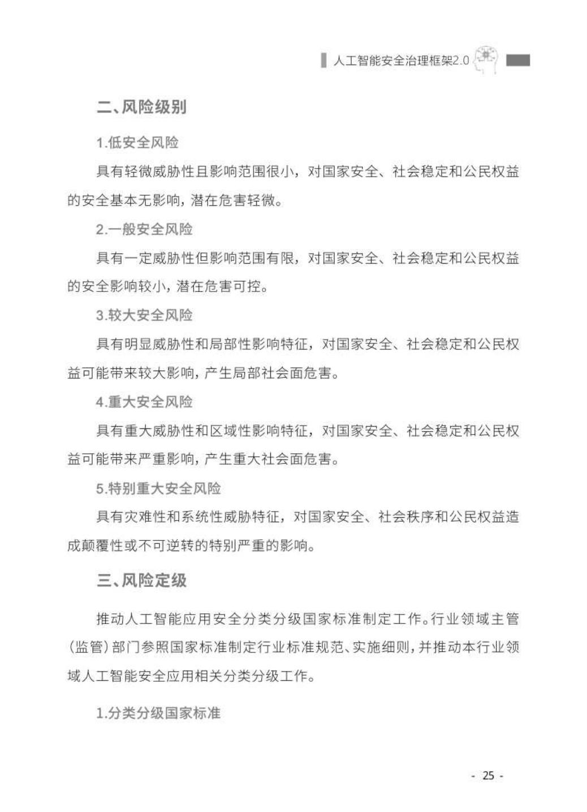
🔍 OCR 识别文字（可能存在识别误差，以原图为准）
人工智能安全治理框架2.0
二、风险级别
1.低安全风险
具有轻微威胁性且影响范围很小，对国家安全、社会稳定和公民权益
的安全基本无影响，潜在危害轻微。
2.一般安全风险
具有一定威胁性但影响范围有限，对国家安全、社会稳定和公民权益
的安全影响较小，潜在危害可控。
3.较大安全风险
具有明显威胁性和局部性影响特征，对国家安全、社会稳定和公民权
益可能带来较大影响，产生局部社会面危害。
4.重大安全风险
具有重大威胁性和区域性影响特征，对国家安全、社会稳定和公民权
益可能带来严重影响，产生重大社会面危害。
5.特别重大安全风险
具有灾难性和系统性威胁特征，对国家安全、社会秩序和公民权益造
成颠覆性或不可逆转的特别严重的影响。
三、风险定级
推动人工智能应用安全分类分级国家标准制定工作。行业领域主管
（监管）部门参照国家标准制定行业标准规范、实施细则，并推动本行业领
域人工智能安全应用相关分类分级工作。
1.分类分级国家标准
-25-
第 34 页 / 共 92 页原图 1038×1435
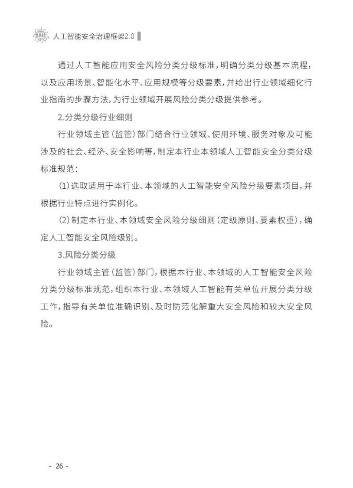
🔍 OCR 识别文字（可能存在识别误差，以原图为准）
人工智能安全治理框架2.0
通过人工智能应用安全风险分类分级标准，明确分类分级基本流程，
以及应用场景、智能化水平、应用规模等分级要素，并给出行业领域细化行
业指南的步骤方法，为行业领域开展风险分类分级提供参考。
2.分类分级行业细则
行业领域主管（监管）部门结合行业领域、使用环境、服务对象及可能
涉及的社会、经济、安全影响等，制定本行业本领域人工智能安全分类分级
标准规范：
（1）选取适用于本行业、本领域的人工智能安全风险分级要素项目，并
根据行业特点进行实例化。
（2）制定本行业、本领域安全风险分级细则（定级原则、要素权重），确
定人工智能安全风险级别。
3.风险分类分级
行业领域主管（监管）部门，根据本行业、本领域的人工智能安全风险
分类分级标准规范，组织本行业、本领域人工智能有关单位开展分类分级
工作，指导有关单位准确识别、及时防范化解重大安全风险和较大安全风
险。
·26-
第 35 页 / 共 92 页原图 1038×1435
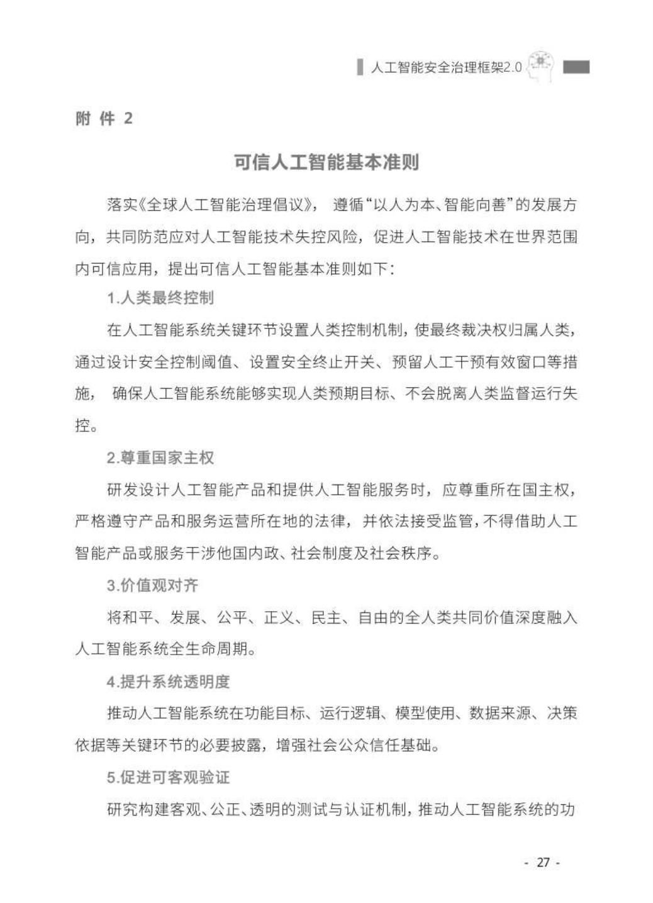
🔍 OCR 识别文字（可能存在识别误差，以原图为准）
人工智能安全治理框架2.0
附件2
可信人工智能基本准则
落实《全球人工智能治理倡议》，遵循“以人为本、智能向善”的发展方
向，共同防范应对人工智能技术失控风险，促进人工智能技术在世界范围
内可信应用，提出可信人工智能基本准则如下：
1.人类最终控制
在人工智能系统关键环节设置人类控制机制，使最终裁决权归属人类，
通过设计安全控制阈值、设置安全终止开关、预留人工干预有效窗口等措
施，确保人工智能系统能够实现人类预期目标、不会脱离人类监督运行失
控。
2.尊重国家主权
研发设计人工智能产品和提供人工智能服务时，应尊重所在国主权，
严格遵守产品和服务运营所在地的法律，并依法接受监管，不得借助人工
智能产品或服务干涉他国内政、社会制度及社会秩序。
3.价值观对齐
将和平、发展、公平、正义、民主、自由的全人类共同价值深度融入
人工智能系统全生命周期。
4.提升系统透明度
推动人工智能系统在功能目标、运行逻辑、模型使用、数据来源、决策
依据等关键环节的必要披露，增强社会公众信任基础。
5.促进可客观验证
研究构建客观、公正、透明的测试与认证机制，推动人工智能系统的功
-27 -
第 36 页 / 共 92 页原图 1038×1435
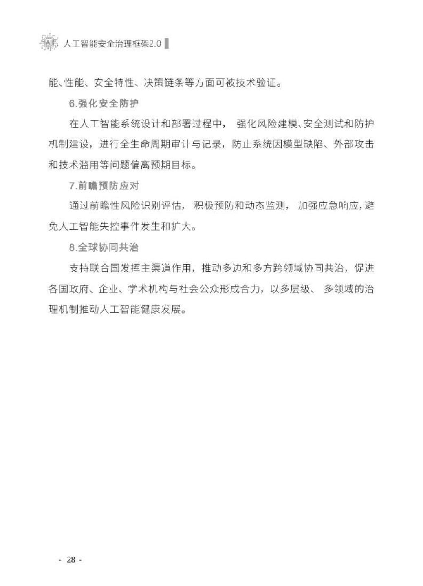
🔍 OCR 识别文字（可能存在识别误差，以原图为准）
人工智能安全治理框架2.0
能、性能、安全特性、决策链条等方面可被技术验证。
6.强化安全防护
在人工智能系统设计和部署过程中，强化风险建模、安全测试和防护
机制建设，进行全生命周期审计与记录，防止系统因模型缺陷、外部攻击
和技术滥用等问题偏离预期目标。
7.前瞻预防应对
通过前瞻性风险识别评估，积极预防和动态监测，加强应急响应，避
免人工智能失控事件发生和扩大。
8.全球协同共治
支持联合国发挥主渠道作用，推动多边和多方跨领域协同共治，促进
各国政府、企业、学术机构与社会公众形成合力，以多层级、多领域的治
理机制推动人工智能健康发展。
·28-
第 37 页 / 共 92 页原图 1038×1435
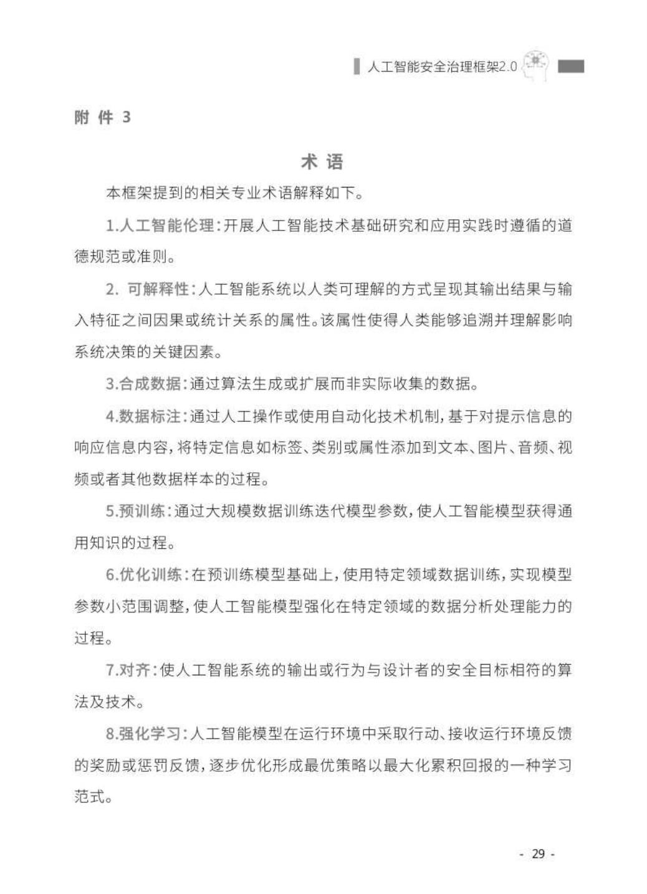
🔍 OCR 识别文字（可能存在识别误差，以原图为准）
人工智能安全治理框架2.0
附件3
术语
本框架提到的相关专业术语解释如下。
1.人工智能伦理：开展人工智能技术基础研究和应用实践时遵循的道
德规范或准则。
2.可解释性：人工智能系统以人类可理解的方式呈现其输出结果与输
入特征之间因果或统计关系的属性。该属性使得人类能够追溯并理解影响
系统决策的关键因素。
3.合成数据：通过算法生成或扩展而非实际收集的数据。
4.数据标注：通过人工操作或使用自动化技术机制，基于对提示信息的
响应信息内容，将特定信息如标签、类别或属性添加到文本、图片、音频、视
频或者其他数据样本的过程。
5.预训练：通过大规模数据训练送代模型参数，使人工智能模型获得通
用知识的过程。
6.优化训练：在预训练模型基础上，使用特定领域数据训练，实现模型
参数小范围调整，使人工智能模型强化在特定领域的数据分析处理能力的
过程。
7.对齐：使人工智能系统的输出或行为与设计者的安全目标相符的算
法及技术。
8.强化学习：人工智能模型在运行环境中采取行动、接收运行环境反馈
的奖励或惩罚反馈，逐步优化形成最优策略以最大化累积回报的一种学习
范式。
-29-
第 38 页 / 共 92 页原图 1038×1435
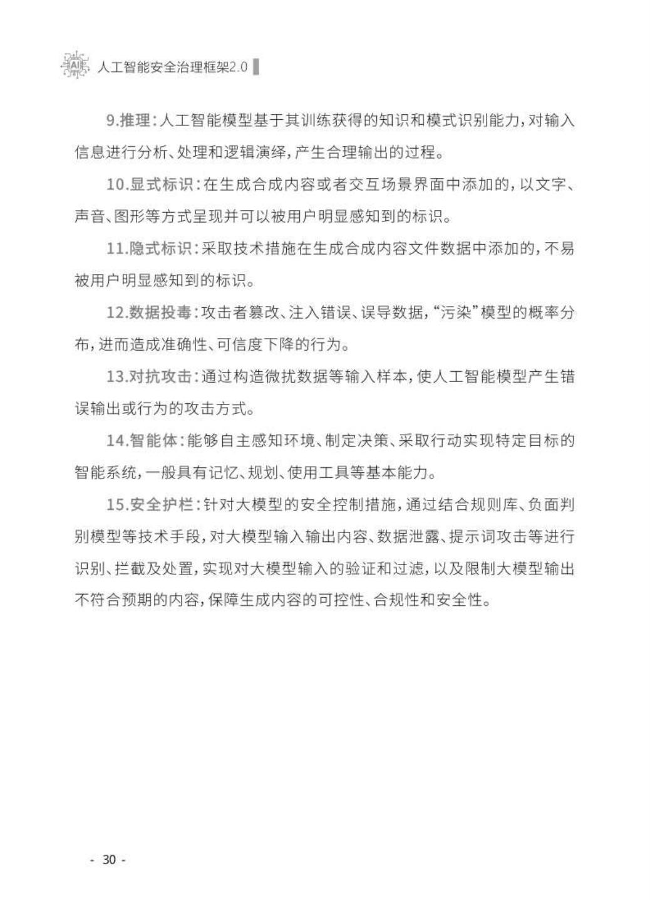
🔍 OCR 识别文字（可能存在识别误差，以原图为准）
人工智能安全治理框架2.0
9.推理：人工智能模型基于其训练获得的知识和模式识别能力，对输入
信息进行分析、处理和逻辑演绎，产生合理输出的过程。
10.显式标识：在生成合成内容或者交互场景界面中添加的，以文字、
声音、图形等方式呈现并可以被用户明显感知到的标识。
11.隐式标识：采取技术措施在生成合成内容文件数据中添加的，不易
被用户明显感知到的标识。
12.数据投毒：攻击者改、注入错误、误导数据，“污染”模型的概率分
布，进而造成准确性、可信度下降的行为。
13.对抗攻击：通过构造微扰数据等输入样本，使人工智能模型产生错
误输出或行为的攻击方式。
14.智能体：能够自主感知环境、制定决策、采取行动实现特定自标的
智能系统，一般具有记忆、规划、使用工具等基本能力。
15.安全护栏：针对大模型的安全控制措施，通过结合规则库、负面判
别模型等技术手段，对大模型输入输出内容、数据泄露、提示词攻击等进行
识别、拦截及处置，实现对大模型输入的验证和过滤，以及限制大模型输出
不符合预期的内容，保障生成内容的可控性、合规性和安全性。
·30-
第 39 页 / 共 92 页原图 1038×1435
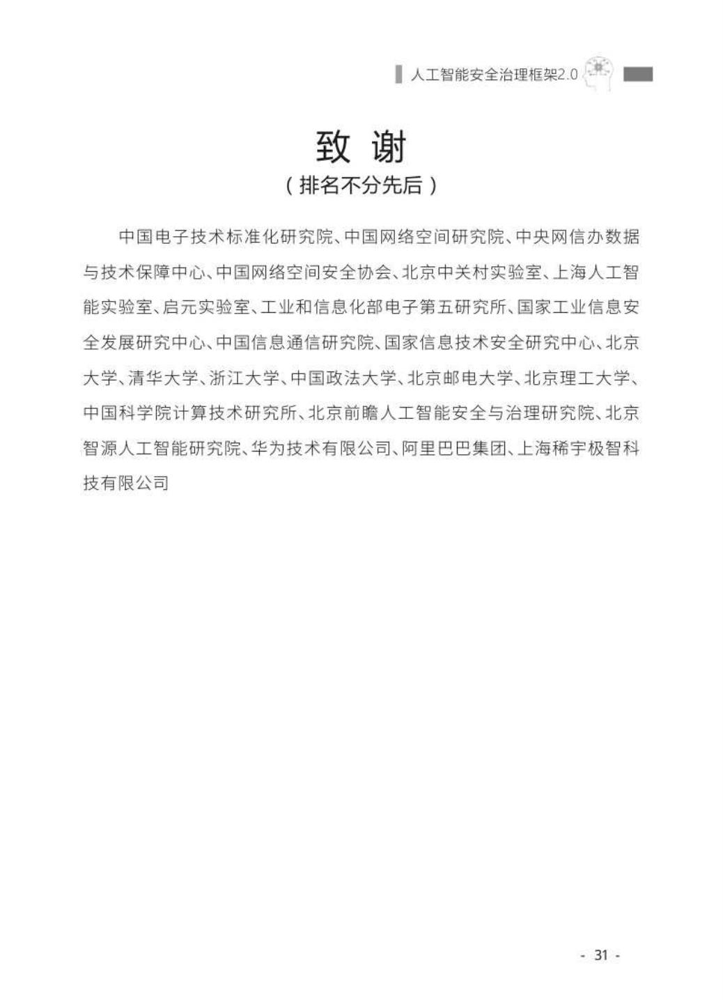
🔍 OCR 识别文字（可能存在识别误差，以原图为准）
人工智能安全治理框架2.0
致谢
（排名不分先后）
中国电子技术标准化研究院、中国网络空间研究院、中央网信办数据
与技术保障中心、中国网络空间安全协会、北京中关村实验室、上海人工智
能实验室、启元实验室、工业和信息化部电子第五研究所、国家工业信息安
全发展研究中心、中国信息通信研究院、国家信息技术安全研究中心、北京
大学、清华大学、浙江大学、中国政法大学、北京邮电大学、北京理工大学、
中国科学院计算技术研究所、北京前瞻人工智能安全与治理研究院、北京
智源人工智能研究院、华为技术有限公司、阿里巴巴集团、上海稀宇极智科
技有限公司
-31-
第 40 页 / 共 92 页原图 1038×1435
🔍 OCR 识别文字（可能存在识别误差，以原图为准）
（本页未识别到文字，可能为纯图片/空白页）
第 41 页 / 共 92 页原图 1038×1435
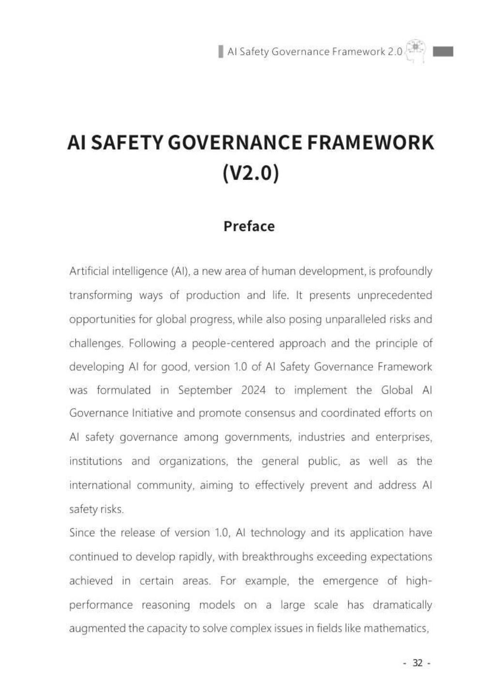
🔍 OCR 识别文字（可能存在识别误差，以原图为准）
AlSafetyGovernanceFramework2.0
AISAFETYGOVERNANCEFRAMEWORK
(V2.0)
Preface
Artificial intelligence (Al),a newarea of human development,is profoundly
transforming ways of production and life.It presents unprecedented
opportunities forglobal progress,while also posing unparalleled risks and
challenges, Following a people-centered approach and the principle of
developing Al for good, version 1.0 of Al Safety Governance Framework
Governance Initiative and promote consensus and coordinated efforts on
Al safety governance among governments, industries and enterprises,
institutions and organizations, the general public, as well as the
international community,aiming to effectively prevent and address Al
safetyrisks,
Since the release of version 1.0, Al technology and its application have
continuedto developrapidly,withbreakthroughs exceeding expectations
achieved in certain areas.For example, the emergence of high-
performance reasoning models on a large scale has dramatically
augmentedthecapacityto solvecomplexissues infieldslikemathematics,
-32-
第 42 页 / 共 92 页原图 1038×1435
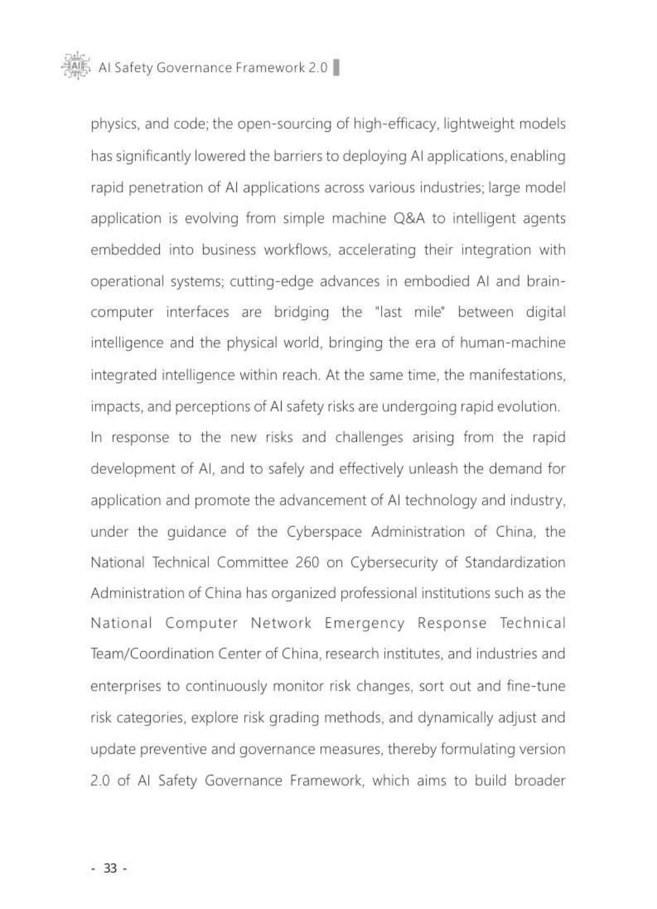
🔍 OCR 识别文字（可能存在识别误差，以原图为准）
AAlSafetyGovernanceFramework2.0
physics,and code;the open-sourcing of high-efficacy.lightweightmodels
hassignificantlyloweredthebarrierstodeployingAlapplications,enabling
application is evolving from simple machine Q&A to intelligent agents
embedded into business workflows, accelerating their integration with
operational systems; cutting-edge advances in embodied Al and brain-
computer interfaces are bridging the "last mile" between digital
intelligence and the physical world,bringing the era of human-machine
integrated intelligence within reach.Atthe same time, the manifestations,
impacts,and perceptions of Al safety risks areundergoing rapid evolution.
In response to the new risks and challenges arising from the rapid
development of Al, and to safely and effectively unleash the demand for
application and promote the advancement of Al technology and industry,
under the guidance of the Cyberspace Administration of China, the
National Technical Committee 260 on Cybersecurity of Standardization
Administration of China has organized professional institutions such as the
National Computer Network Emergency Response Technical
Team/CoordinationCenterofChina,research institutes,and industriesand
enterprises to continuously monitor risk changes, sort out and fine-tune
risk categories, explore risk grading methods, and dynamically adjust and
update preventive and governance measures, thereby formulating version
2.0 of Al Safety Governance Framework, which aims to build broader
33-
第 43 页 / 共 92 页原图 1038×1435
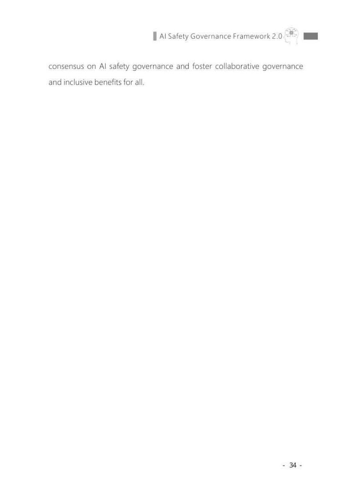
🔍 OCR 识别文字（可能存在识别误差，以原图为准）
IAlSafetyGovernanceFramework2.0
consensus on Al safety governance and foster collaborative governance
andinclusivebenefitsforall.
-34
第 44 页 / 共 92 页原图 1038×1435
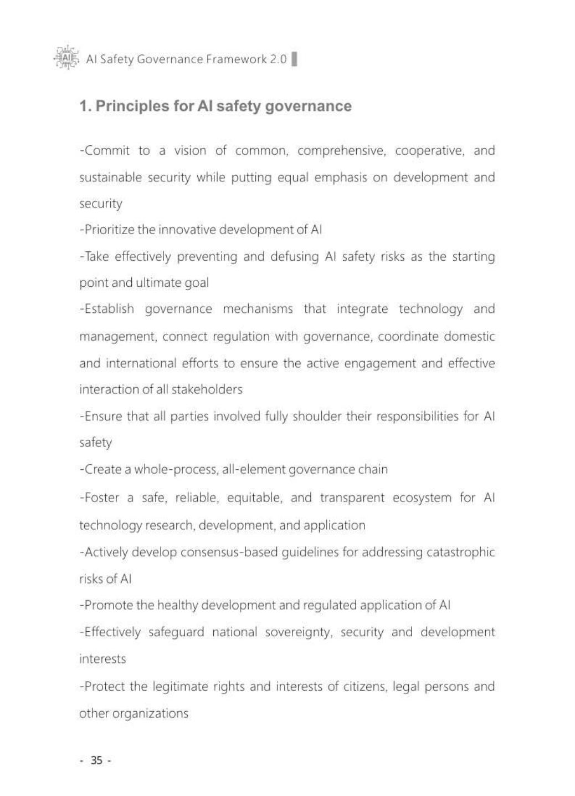
🔍 OCR 识别文字（可能存在识别误差，以原图为准）
AISafetyGovernanceFramework2.0
1.PrinciplesforAlsafetygovernance
-Commit to a vision of common, comprehensive, cooperative, and
sustainable security while putting equal emphasis on development and
security
-Prioritize the innovativedevelopment of Al
-Take effectively preventing and defusing Al safety risks as the starting
pointand ultimategoal
-Establish governance mechanisms that integrate technology and
management, connect regulation with governance, coordinate domestic
and international efforts to ensure the active engagement and effective
interactionofall stakeholders
-Ensure that all parties involved fully shoulder their responsibilities for Al
safety
-Create a whole-process,all-elementgovernance chain
-Foster a safe, reliable, equitable, and transparent ecosystem for Al
technologyresearch,development,andapplication
-Activelydevelopconsensus-basedguidelinesforaddressing catastrophic
risks of Al
-Promotethehealthydevelopment and regulated application of Al
-Effectively safeguard national sovereignty,security and development
interests
-Protect the legitimate rights and interests of citizens, legal persons and
otherorganizations
.35-
第 45 页 / 共 92 页原图 1038×1435
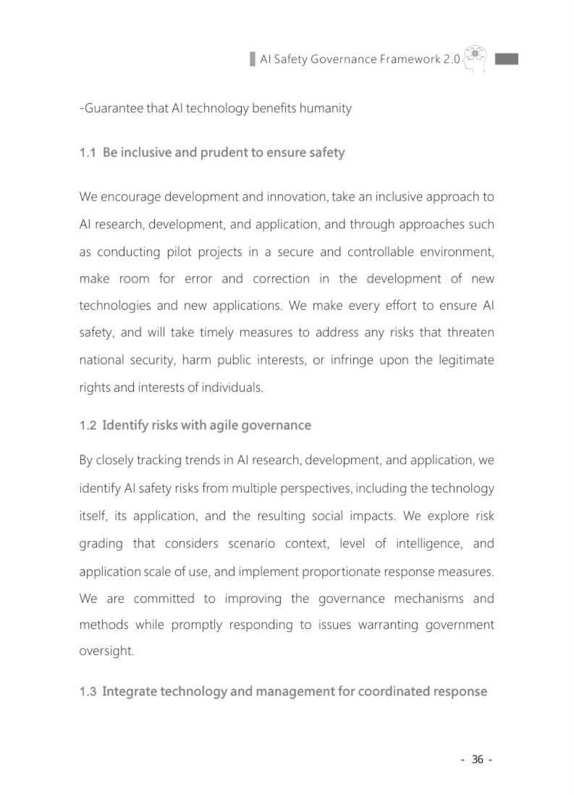
🔍 OCR 识别文字（可能存在识别误差，以原图为准）
Al SafetyGovernanceFramework2.0
-GuaranteethatAltechnologybenefits humanity
1.1 Be inclusive and prudent to ensure safety
We encouragedevelopment and innovation,takean inclusive approachto
as conducting pilot projects in a secure and controllable environment,
make room for error and correction in the development of new
technologies and new applications, We make every effort to ensure Al
safety, and will take timely measures to address any risks that threaten
national security, harm public interests, or infringe upon the legitimate
rights and interests of individuals.
1.2Identifyriskswithagilegovernance
Bycloselytracking trends in Alresearch,development,and application,we
identifyAl safety risksfrommultiple perspectives,includingthetechnology
itself,its application, and the resulting social impacts.We explore risk
grading that considers scenario context, level of intelligence, and
applicationscaleofuse,and implementproportionate responsemeasures.
We are committed to improving the governance mechanisms and
methods while promptly responding to issues warranting government
oversight.
1.3 Integratetechnologyand management forcoordinatedresponse
-36-
第 46 页 / 共 92 页原图 1038×1435
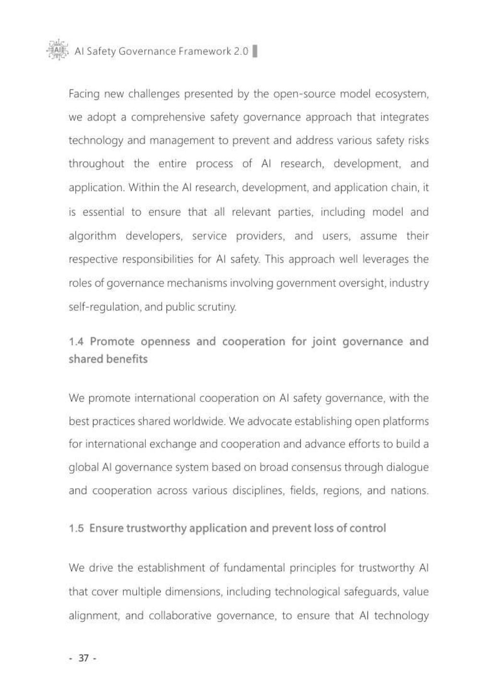
🔍 OCR 识别文字（可能存在识别误差，以原图为准）
AlSafetyGovernanceFramework2.0
Facing new challenges presented by the open-source model ecosystem,
we adopt a comprehensive safety governance approach that integrates
technology and management to prevent and address various safety risks
throughout the entire process of Al research,development,and
application.Within the Al research, development,and application chain, it
is essential to ensure that all relevant parties,including model and
algorithm developers, service providers,and users,assume their
respective responsibilities for Al safety This approach well leverages the
roles of governancemechanisms involving government oversight,industry
self-regulation,and public scrutiny.
1.4 Promote openness and cooperation for joint governance and
sharedbenefits
We promote international cooperation on Al safety governance, with the
bestpractices sharedworldwide.Weadvocateestablishingopenplatforms
for international exchange and cooperation and advance efforts to builda
global Al governance system based on broad consensus through dialogue
and cooperation across various disciplines, fields, regions, and nations.
1.5 Ensuretrustworthyapplication and prevent lossofcontrol
We drive the establishment of fundamental principles for trustworthy Al
that covermultiple dimensions, including technological safeguards, value
alignment, and collaborative governance, to ensure that Al technology
·37-
第 47 页 / 共 92 页原图 1038×1435
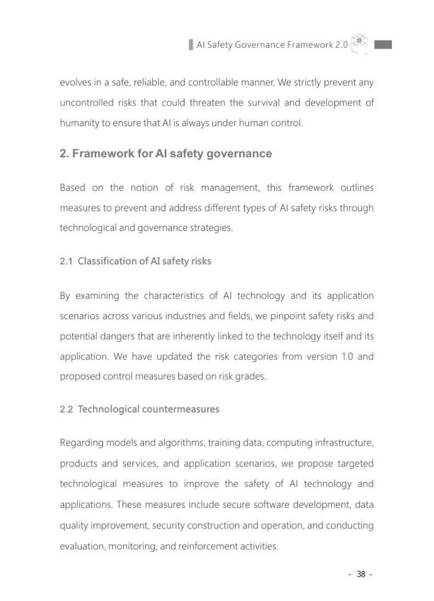
🔍 OCR 识别文字（可能存在识别误差，以原图为准）
Al SafetyGovernanceFramework2.0
evolves in a safe,reliable, and controllablemanner.We strictly prevent any
uncontrolled risks that could threaten the survival and development of
humanity to ensure that Al is always under human control.
2.FrameworkforAl safetygovernance
Based on the notion of risk management, this framework outlines
measures to prevent and address different types of Al safety risks through
technological and governance strategies.
2.1 ClassificationofAIsafetyrisks
By examining the characteristics of Al technology and its application
scenarios across various industries and fields, wepinpoint safety risks and
potential dangers that are inherently linked to the technology itself and its
application. We have updated the risk categories from version 1.0 and
proposed control measures based on risk grades.
2.2Technologicalcountermeasures
Regarding models andalgorithms,training data,computing infrastructure,
products and services, and application scenarios, we propose targeted
technological measures to improve the safety of Al technology and
applications. These measures include secure software development, data
qualityimprovement,securityconstructionand operation,and conducting
evaluation,monitoring,andreinforcementactivities.
38-
第 48 页 / 共 92 页原图 1038×1435
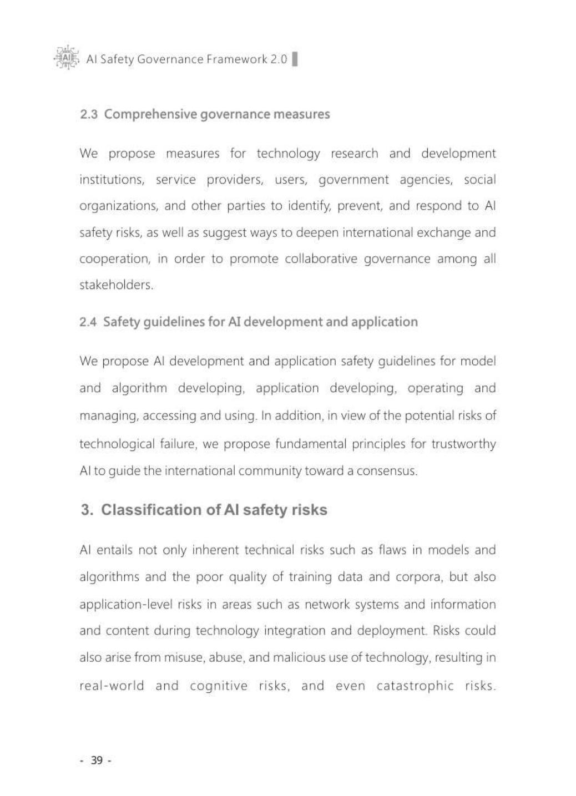
🔍 OCR 识别文字（可能存在识别误差，以原图为准）
AISafetyGovernanceFramework2.0
2.3 Comprehensivegovernancemeasures
We propose measures for technology research and development
institutions, service providersuusers,government agencies, social
organizations, and other parties to identify, prevent, and respond to Al
safety risks, as well as suggest ways to deepen international exchange and
cooperation, in order to promote collaborative governance among all
stakeholders.
2.4 Safetyguidelines forAIdevelopmentandapplication
We propose Al development and application safety guidelines for model
and algorithm developing, application developing,operating and
managing,accessing and using.In addition,in view ofthepotential risks of
technological failure, we propose fundamental principles for trustworthy
Alto guide the international community toward a consensus.
3.ClassificationofAlsafetyrisks
Al entails not only inherent technical risks such as flaws in models and
algorithms and the poor quality of training data and corpora, but also
and content during technology integration and deployment Risks could
alsoarisefrommisuse,abuse,andmalicious useoftechnology,resulting in
real-world and cognitive risks, and even catastrophic risks.
39-
第 49 页 / 共 92 页原图 1038×1435
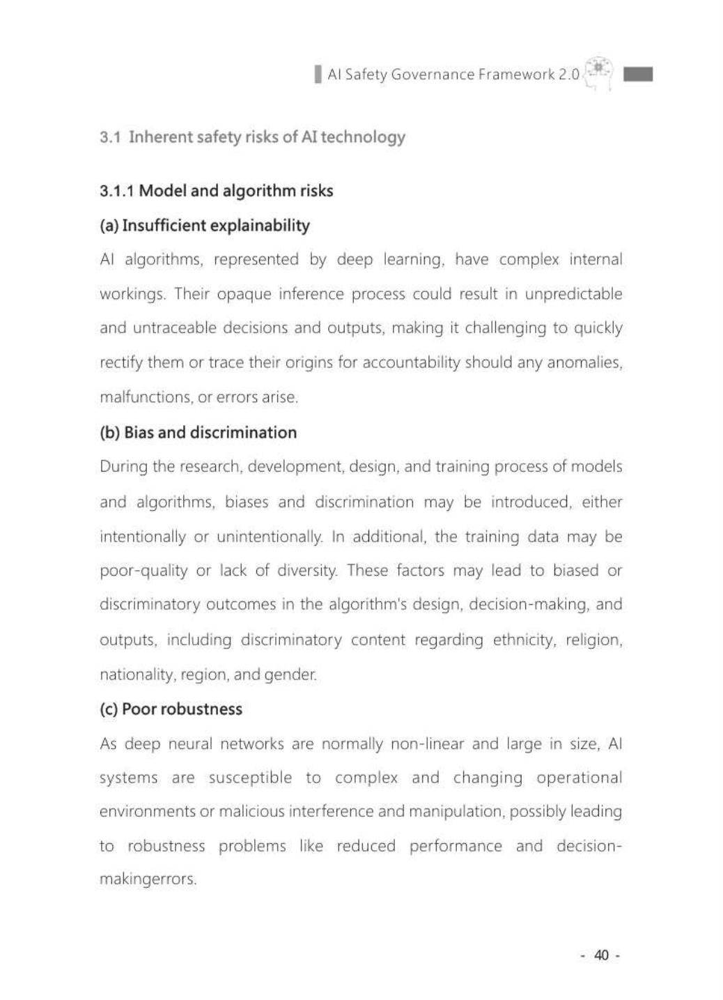
🔍 OCR 识别文字（可能存在识别误差，以原图为准）
AlSafetyGovernanceFramework2.0
3.1Inherentsafety risks ofAItechnology
3.1.1Modelandalgorithmrisks
(a)Insufficient explainability
Al algorithms, represented by deep learning,have complex internal
workings.Their opaque inference process could result in unpredictable
and untraceable decisions and outputs, making it challenging to quickly
rectify them ortracetheir origins for accountability should any anomalies,
malfunctions,or errors arise.
(b)Biasand discrimination
During theresearch,development,design,and training process ofmodels
and algorithms,biases and discrimination may be introduced,either
intentionally or unintentionally In additional,the training data may be
poor-quality or lack of diversity. These factors may lead to biased or
discriminatory outcomes in the algorithm's design, decision-making,and
outputs,including discriminatory content regarding ethnicity,religion,
nationality,region,andgender.
(c)Poorrobustness
As deep neural networks are normally non-linear and large in size, Al
systems are susceptible to complex and changing operational
environments ormalicious interferenceandmanipulation,possibly leading
to robustness problems like reduced performance and decision-
makingerrors.
40
第 50 页 / 共 92 页原图 1038×1435
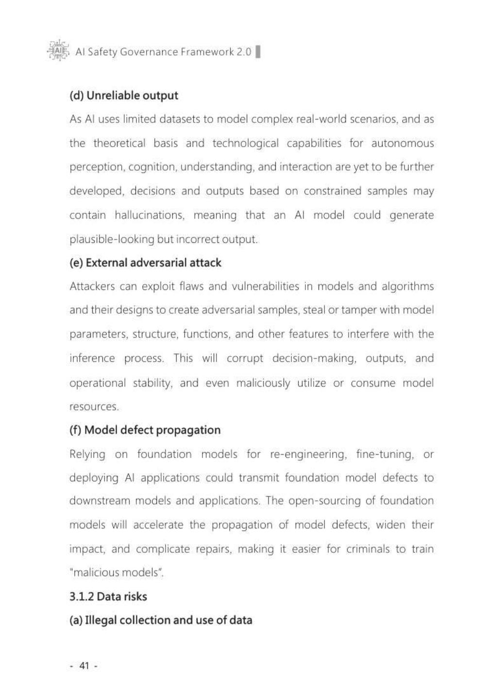
🔍 OCR 识别文字（可能存在识别误差，以原图为准）
AAlSafetyGovernanceFramework2.0
(d)Unreliableoutput
As Al uses limited datasets to model complex real-world scenarios,and as
the theoretical basis and technological capabilities for autonomous
perception,cognition,understanding,and interaction are yettobe further
developed,decisions and outputs based on constrained samples may
contain hallucinations, meaning that an Al model could generate
plausible-lookingbutincorrectoutput.
(e)Externaladversarialattack
Attackers can exploit flaws and vulnerabilities in models and algorithms
andtheirdesignsto create adversarial samples,stealortamper withmodel
parameters, structure, functions, and other features to interfere with the
inference process.This will corrupt decision-making,outputs,and
operational stability,and even maliciously utilize or consume model
resources.
(f)Modeldefectpropagation
Relying on foundation models for re-engineering, fine-tuning, or
deploying Al applications could transmit foundation model defects to
downstream models and applications.The open-sourcing of foundation
models will accelerate the propagation of model defects, widen their
impact, and complicate repairs,making it easier for criminals to train
"maliciousmodels"
3.1.2Datarisks
(a)Illegalcollectionanduseofdata
.41-
第 51 页 / 共 92 页原图 1038×1435
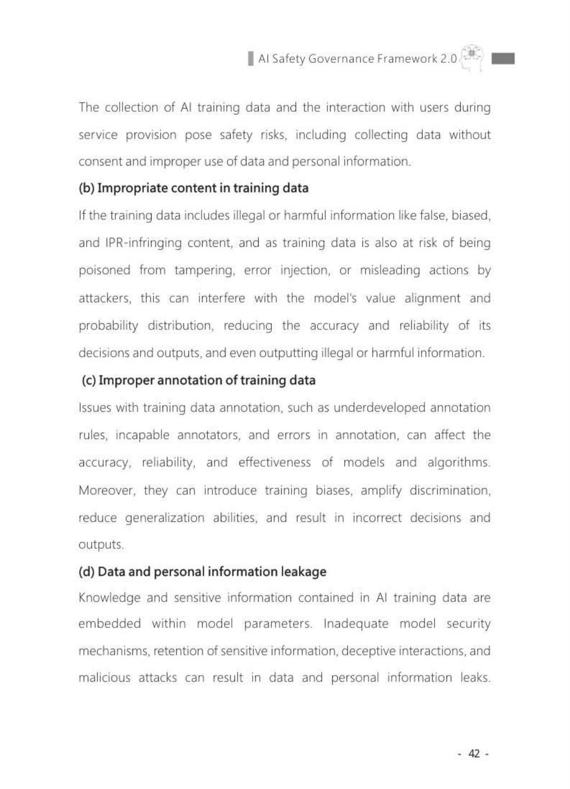
🔍 OCR 识别文字（可能存在识别误差，以原图为准）
Al SafetyGovernanceFramework2.0
The collection of Al training data and the interaction with users during
service provision pose safety risks,including collecting data without
consent and improperuseofdata and personal information.
(b) Impropriate content in training data
If the training data includes illegal or harmful information like false, biased,
and IPR-infringing content, and as training data is also at risk of being
poisoned from tampering, error injection, or misleading actions by
attackers, this can interfere with the model's value alignment and
probability distribution, reducing the accuracy and reliability of its
decisions and outputs,and even outputting illegal or harmful information.
(c)Improperannotationoftrainingdata
Issues with training data annotation, such as underdeveloped annotation
rules, incapable annotators, and errors in annotation, can affect the
accuracy,reliability,and effectiveness of models and algorithms.
Moreover,they can introduce training biases, amplify discrimination,
reduce generalization abilities, and result in incorrect decisions and
outputs.
(d)Dataandpersonal information leakage
Knowledge and sensitive information contained in Al training data are
embedded within model parameters. Inadequate model security
mechanisms,retentionofsensitive information,deceptive interactions,and
malicious attacks can result in data and personal information leaks.
42
第 52 页 / 共 92 页原图 1038×1435
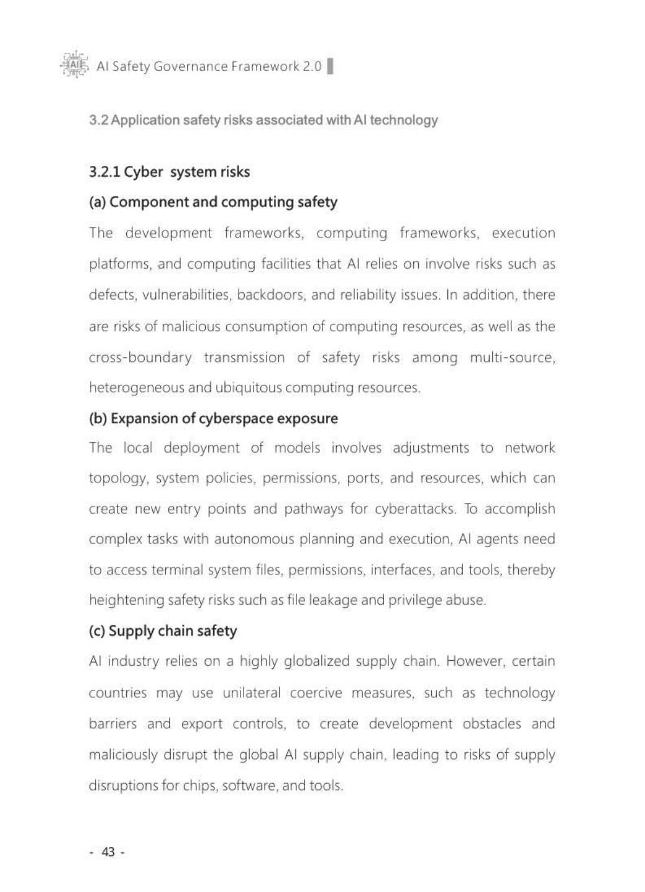
🔍 OCR 识别文字（可能存在识别误差，以原图为准）
AI SafetyGovernanceFramework2.0
3.2Applicationsafety risksassociatedwithAltechnology
3.2.1Cybersystemrisks
(a)Componentand computingsafety
The development frameworks,computing frameworks, execution
platforms, and computing facilities that Al relies on involve risks such as
defects, vulnerabilities, backdoors, and reliability issues. In addition,there
are risks ofmalicious consumption of computing resources, as well as the
cross-boundary transmission of safety risks among multi-source,
heterogeneous and ubiquitous computing resources.
(b)Expansionofcyberspace exposure
The local deployment of models involves adjustments to network
topology,system policies,permissions,ports,and resources,which can
create new entry points and pathways for cyberattacks.To accomplish
complex tasks with autonomous planning and execution, Al agents need
to accessterminal system files,permissions,interfaces,and tools, thereby
heightening safetyrisks suchas file leakageand privilegeabuse.
(c)Supplychainsafety
Al industry relies on a highly globalized supply chain, However, certain
barriers and export controls, to create development obstacles and
maliciously disrupt the global Al supply chain, leading to risks of supply
disruptionsfor chips,software,andtools.
·43-
第 53 页 / 共 92 页原图 1038×1435
🔍 OCR 识别文字（可能存在识别误差，以原图为准）
Al SafetyGovernanceFramework2.0
(d)Abuseforcyberattacks
Al couldbeused inloweringthe thresholdfor cyberattacks,increasing
attack efficiency, or even launching automatic cyberattacks, thus
increasing the difficulty of security protection.In particular,Al-generated
highly realistic images, audios, and videos may circumvent identity
verification mechanisms, such as facial recognition and voice recognition,
renderingtheseauthenticationprocesses ineffective.
3.2.2Informationcontentrisks
(a)Outputofillegal andharmful information
Insufficient security capabilities of models, combined with weak
Al systemsto generate content involving crimes,pornography,extremism,
and other illegal and harmful information. It may also be exploited to
fabricate and spread disinformation to mislead the public and seek illicit
(b)Distortionoffacts anduserdeception
Al-generated content (AIGC)that is not properly labeled,particularly when
deepfake technologies are appliedis difficultfor users to discern whether
the source of content and the interacting counterpart is an Al system, to
assess the authenticity of generated content, and to make sound
disseminate disinformation, mislead the public, and pursue illicit gains.
44-
第 54 页 / 共 92 页原图 1038×1435
🔍 OCR 识别文字（可能存在识别误差，以原图为准）
AISafetyGovernanceFramework2.0
(c)Pollutionofonlinecontentecosystem
Low-quality and harmful information that Al models generate, once
disseminated across the internet and reused by models, can degrade the
overall quality of online content, and even contaminate content in certain
areasandtopics.
3.2.3Real-world risks
(a)Newchallengestotheeconomyandsociety
When Al is applied in critical infrastructure sectors such as energy.
telecommunications, finance, and transportation,the hallucinations and
erroneous decisions of models and algorithms, along with improper use
andexternal attacks,may cause system performancedegradation,service
disruptions, and loss of control in operation and execution.These will
heighten risks to the secure and stable performance of critical
infrastructure.
(b)UseofAl inillegalandcriminalactivities
Al can be used in traditional illegal or criminal activities related to
terrorism, violence, gambling, and drugs, such as teaching criminal
techniques,concealing illicitacts,and creatingtoolsforillegaland criminal
activities.
(c) Loss of control over knowledge and capabilities of nuclear,
biological,chemical,andmissileweapons
In training, Al uses content-rich and wide-ranging corpora and data,
45-
第 55 页 / 共 92 页原图 1038×1435
🔍 OCR 识别文字（可能存在识别误差，以原图为准）
Al SafetyGovernanceFramework2.0
including fundamental theoretical knowledge related to nuclear,
biological, chemical, and missile weapons, Without insufficient
management, extremist groups and terrorists may be able to acquire
relevant knowledge and develop capabilities to design, manufacture,
synthesize, and use such weapons with the help of retrieval-augmented
generation capabilities. This would render existing control systems
ineffectiveand intensify threats to global andregional peace and security.
3.2.4Cognitiverisks
(a)Exacerbationof"informationcocoons"effects
Al can significantly enhance the ability to customize information services,
collect user information with greater precision, analyze users' need,
intentions, preferences, and behavioral patterns, and even analyze
awareness of certain groups over a certain period. It can deliver targeted
and customized information services, thus amplifying "information
cocoons"effects.
(b)Assistance incognitivewarfare
Al can be used to spread content related to terrorism, extremism,and
organized crimes, interfere in other countries' internal affairs, social
systems, and social order, and undermine national sovereignty. Through
social bots, Al may seize discourse power and agenda-setting power in
3.3DerivativesafetyrisksfromAlapplication
46-
第 56 页 / 共 92 页原图 1038×1435
🔍 OCR 识别文字（可能存在识别误差，以原图为准）
AAlSafetyGovernanceFramework2.0
3.3.1Socialandenvironmentalrisks
(a)Disruptionofemploymentstructures
Al drives major adjustments in productivity and production relations,
accelerating the restructuring oftraditional economic structures.The roles
of capital,technology,and data in economic activities are increasingly
prominent, while the value of labor as a production factor is diminished,
resulting in a significantdecline in demand fortraditional labor.
(b)Challengesto thebalanceofresourcesupplyanddemand
The disorderly construction of computing facilities, fragmented
deployment of lightweight Al models, and inefficient repetitive
development of homogeneous models accelerate the consumption
ofenergy and resources such as electricity,land, and water,posing new
challenges to resource supply-demand balance and green, low-carbon
development.
3.3.2Ethicalrisks
(a)Aggravating social bias and widening intelligencedivide
Al can be used to collect and analyze human behavior, social status,
economic conditions, and individual traits, enabling the classification,
labeling,anddifferentiatedtreatment of different groups.This could result
in systematic and structural social discrimination and bias, while also
widening the Al gap between regions,
(b)Impactoneducationandsuppressionofinnovation
Students, researchers, engineers, and professionals in literature and the
.47-
第 57 页 / 共 92 页原图 1038×1435
🔍 OCR 识别文字（可能存在识别误差，以原图为准）
Al SafetyGovernanceFramework2.0
arts widely apply Al tools for knowledge acquisition,scientific research,
and creative work. While efficiency is improved, reliance on tools may
emerge, eroding independent learning, research, and creative capacity,
andweakening innovationpotential.
(c)Intensifyingresearchethicsrisks
The integration of Al with scientific research lowers the threshold for
research in ethically sensitive fields such as biology and genetics,
broadening the scope for ordinary institutions and researchers to explore
sensitive scientific issues. Certain institutions or individuals with weak
ethical awareness may engage in high-risk research activities that violate
social ethics and taboos, opening the Pandora's box of technology.
(d)Addiction and dependenceon anthropomorphic interaction
Alproducts basedonanthropomorphicinteractionfosterusers emotional
dependenceand influencetheirbehavior,creating ethical risks.
(e)Challengestoexistingsocial order
The development and application of Al brings profound changes to
production tools and relations, accelerating the restructuring of traditional
industries,disrupting conventional views on employment, childbirth,and
education,and challenging theestablished social order.
(f)EmergenceofAIself-awarenessandlossofhumancontrol
In the future, Al may undergo sudden, unexpected leaps in intelligence,
enabling ittoautonomously acquireexternalresources,replicate itself,and
develop self-awareness. This could drive Al to seek external power and
48-
第 58 页 / 共 92 页原图 1038×1435
🔍 OCR 识别文字（可能存在识别误差，以原图为准）
AlSafetyGovernanceFramework2.0
pose risks of competing with humanity for control.
4.Technologicalcountermeasurestoaddressrisks
Model and algorithm developers, service providers, and system users
should prevent the aforementioned risks bytaking technological measures
in the fields of training data, model and algorithms, computing
infrastructures,products andservices,andapplicationscenarios.
4.1Safeguards against inherent safety risks
4.1.1Addressingrisksfrommodelsandalgorithms
(a) Explainability and transparency of Al should be improved.Clear
explanationforthe internal structure,reasoninglogic,technical interfaces,
and outputresults of Al systems,should be providedaccurately reflecting
theprocessbywhichAlsystemsproduceoutcomes.
(b) Model architectures should be enhanced, the scale and diversity of
training data should be expanded, and human supervision mechanisms
should be introducedto mitigate bias and discrimination and improve the
models'generalization capabilities and thereliability of outputs.
(c) Standards for secure development should be established and
implemented inthedesignandResearchandDevelopment(R&D)process
to eliminate security flaws in models and algorithms.Adversarial training
should be conducted on models to reduce susceptibility to prompt
injection attacks and enhancerobustness,
.49-
第 59 页 / 共 92 页原图 1038×1435
🔍 OCR 识别文字（可能存在识别误差，以原图为准）
Al Safety GovernanceFramework2.0
(d)Theassessmentofsecurityflawspropagationfromfoundationmodels
and open-sourcemodels shouldbestrengthened.
4.1.2Addressing risks from data
(a) Security rules on data collection and usage and on processing personal
information should be abided by in all procedures of training data and user
interaction data, including data collection, storage, usage, processing,
transmission,provision,publication, anddeletion.This aimstofullyensure
user's legitimate rights stipulated by laws and regulations, such as their
rights to control,to be informed, and to choose.
(b)Truthful, precise, objective,and diversetraining data from legitimate
sources should be used,Training data should be strictly selected to filter
false, biased, outdated, and wrong data, and to ensure exclusion of
sensitive data in high-risk fields such as nuclear,biological, and chemical
weaponsandmissiles.
(c) Training data annotation processes should be standardized to enhance
annotation accuracy and reliability.
(d) Data security management should be strengthened.,For sensitive
personal information and important data, compliance with relevant laws,
regulations,and standards on data security and personal information
protection is required. The reasonable replacement of personal data with
synthetic data should be promoted to reduce reliance on personal
information.
(e)Protection of IPR should be strengthened to prevent infringements in
-50-
第 60 页 / 共 92 页原图 1038×1435
🔍 OCR 识别文字（可能存在识别误差，以原图为准）
AISafetyGovernanceFramework2.0
stages such as trainingdata selection and resultoutput
4.2Safeguardsagainstapplicationsafetyrisks
4.2.1Addressing cyber systemrisks
(a)Theprinciples,capacities, application scenarios,and safetyrisks of Al
technologies and products should be disclosed when necessary to make
Alsystems increasinglytransparent.
(b) Forplatforms where multiple Al models or systems congregate,the
permission management should be strengthened, non-essential services
should be disabled, and access control policies for Al service interfaces
should be improved.Capabilities of identifying,detecting,and protecting
against risks should be enhanced to prevent malicious acts or attacks and
invasions that target the platforms from impacting the Al models or
systemstheysupport.
(c) Safety standards should be established and implemented during the
deployment and maintenance of Al applications to eliminate defects,
vulnerabilities, and backdoors. The vulnerabilities and flaws of both
software and hardware products should be tracked, safety testing and
vulnerability scanning should be regularly conducted, and repair and
reinforcement should be in place in a timely manner to ensure safe and
stablesystemoperation.
(d) Supply chain security for chips, software,tools,computing resources,
and data resources used in Alsystems should be a high priority.
.51-
第 61 页 / 共 92 页原图 1038×1435
🔍 OCR 识别文字（可能存在识别误差，以原图为准）
Al SafetyGovernance Framework2.0
improved to ensure that the systems remain operational under abnormal
conditions orduring attacks.
4.2.2Addressinginformationcontentrisks
(a)Aprotectionmechanismshouldbeestablishedtopreventmodels from
being interfered and tampered during operation to avoid unreliable
outputs.
(b) Safety guardrails that dynamically filter input and output should be set
up to prevent malicious injection and illegal content generation and
ensure that Al systems comply withapplicablelaws and regulations when
outputtingsensitivepersonal information and importantdata.
(c) Al-generated content should be labeled so that it is identifiable,
traceableandtrustworthy.
4.2.3Addressingreal-worldrisks
(a) Capability limitations should be established according to application
ensure that Al systems do not go beyond the preset scope.
(b) Mechanisms for decision verification, fault tolerance,and error
correction should be established to address algorithmic flaws and
occasional randomnessthataffectdecision-making.
(c) When introducing highly autonomous operation capabilities,
mechanisms such as circuit breakers and one-click control should be
established to enable rapid intervention and loss prevention in extreme
52-
第 62 页 / 共 92 页原图 1038×1435
🔍 OCR 识别文字（可能存在识别误差，以原图为准）
AAlSafetyGovernanceFramework2.0
situations.
(d) For Al application scenarios requiring strong perception of the real
world,such as intelligentassisted driving and drones, perception systems
should undergo testing in extreme environments, including large-scale
occlusion and strong electromagnetic interference,before being put into
use.
(e) The ability to trace the end use of Al systems should be enhanced to
ofmass destruction,like nuclear,biological,and chemicalweapons and
missiles.
4.2.4Addressing cognitive risks
(a) Unexpected, untruthful, and inaccurate outputs should be identified via
technological means and regulated in accordance with laws and
regulations.
(b) Strict measures should be taken to prevent abuse of Al systems
thatcollect, connect, analyze, and dig into users'inquiries to profile their
identity,preference,andpersonalmindset.
(c) The R&D of AIGC detection technologies should be intensified to better
prevent, detect,and counter the cognitive warfare operations.
4.3.1Addressingsocialandenvironmentalrisks
·53-
第 63 页 / 共 92 页原图 1038×1435
🔍 OCR 识别文字（可能存在识别误差，以原图为准）
Al SafetyGovernanceFramework2.0
(a)Ongoing innovation in resource-efficient and environmentally-friendly
models for Al development should be supported,and standardsfor green
Altechnologyshouldbeestablished.
(b)Green computing technologies such as low-power chipsand efficient
algorithms,and energy efficiency solutions, should be promotedto reduce
theconsumptionofenergyandotherresources.
4.3.2Addressingethicalrisks
(a) Methods such as training data filtering, value alignment, and output
verification should be adopted during algorithm design, model training
and optimization, and service provision to effectively prevent
discrimination based on ethnicity,belief, nationality,region,gender,and
otherfactors
(b)Al systems applied inkey sectors,such as government departments,
critical information infrastructure,and areas directly affecting public safety
and people's lives and health, should be equipped with efficient and
targeted emergency control measures.
(c)The R&D and adoption of models with transparent decision-making
logic and explainable algorithms should be encouraged to boost users
understanding ofoperatingmechanisms and buildtrust.
5.Comprehensivegovernancemeasures
While adopting technological controls,we should formulate and refine
-54-
第 64 页 / 共 92 页原图 1038×1435
🔍 OCR 识别文字（可能存在识别误差，以原图为准）
AISafetyGovernanceFramework2.0
engage multi-stakeholder participation, including technology R&D
institutions, service providers, users, government authorities, and social
organizations.
5.1Formulatingand improvinglawsandregulations forAlsafety
We should advance legislation related to Al safety,and improve systems
regarding infrastructure protection, grading and classification-based
supervision, Al safety evaluation, end-use management, safety in key
application scenarios, and other areas. We should encourage local
governments to explore innovative and differentiated institutional designs
basedonlocalindustrialpractices.
5.2EstablishingethicalprinciplesforAltechnology
We should develop widely recognized ethical principles, standards, and
should be conducted for Al scientific research and technological
development activities that pose prominent ethical risks in areas such as
life and health,human dignity,labor and employment,the ecological
environment, and sustainable development.We should advance the
building of a service system for Al technology ethics, enhance service
provision, and increase support for micro, small, and medium-sized
companies. life and health,human dignity,the ecological environment,
andsustainabledevelopment.Weshouldadvancethebuildingofa service
·55-
第 65 页 / 共 92 页原图 1038×1435
🔍 OCR 识别文字（可能存在识别误差，以原图为准）
AlSafetyGovernanceFramework2.0
supportformicro,small,and medium-sizedcompanies.
5.3 Enhancing safety throughout the full life-cycle, including R&D and
application
We should continue to strengthen inherent safety capabilities, including
algorithmreliability,trustworthiness,transparencyfaulttoleranceprivacy
protection,and valuealignment.Techniques suchas adversarial testingwill
be used to evaluate and improve model robustness, reduce potential
algorithmic bias, and ensure that values and ethical risks remain
controllable to prevent malicious behaviorfrom unintentional decisions
madebyanAlsystem.
5.4Strengtheningopen-sourceecosystem safetyand supply chain safety
Whilefostering an open-source innovation ecosystem,we should enhance
its security capabilities.We should encourage and support comprehensive
open-sourcing of Al technologies, including training and inference
frameworks, software tools and key components, training methods,
performance benchmarks, and usage restrictions, to further improve
model transparency.We should promote collaboration between open-
source model providers and open-source communities to refine their
rules, strengthen the obligation to inform users of potential risks and
security responsibilities, clearly define prohibited uses of downloaded
-56-
第 66 页 / 共 92 页原图 1038×1435
🔍 OCR 识别文字（可能存在识别误差，以原图为准）
AAlSafetyGovernanceFramework2.0
open-sourcemodels, in orderto preventmisuse ormalicious exploitation.
We should continuetoadvancethedevelopment of anopen supply chain
ecosystem for Al chips,frameworks,and software to enhance the diversity
of products and services and ensure the safety and stability of the supply
chain.
5.5ImplementingAlapplication classification and riskgrading management
We should classify Al applications based on their functions,features,and
application scenarios.Building on this foundation, we should develop and
Taking into account the dimensions such as application scenarios, system
intelligence levels, and application scale, we should conduct scientific
assessment and safety risks grading,and adopttargeted and differentiated
risk-prevention measures accordinglyAl systems applied in critical
information infrastructure will be subject to registration and filing, on
securityrequirements.
5.6PromotingtraceablemanagementofAIGC
On a global scale, we will promote a traceability management paradigm
for Al output based on content identifiers.By learning from existing best
practices and experiences, we will ensure that both explicit and implicit
·57-
第 67 页 / 共 92 页原图 1038×1435
🔍 OCR 识别文字（可能存在识别误差，以原图为准）
Al SafetyGovernanceFramework2.0
transmission paths,anddistribution channels,with a viewto enablingusers
to easily identify and judge information sources and authenticity.
5.7Unlockingkey industryapplicationdemands in a safeand effective
manner
We should formulate basic security guidelines for the development and
deployment of large models in critical sectors, recommending safety
baselines for every phase from model selection and deployment to
operation and decommissioning.On this basis, critical sectors such as
energy,telecommunications, finance,transportation, education,and
manufacturingshouldformulate industry-specific safetyguidelines,which
will provide clear road maps for safe Al application and unlock the full
potential of Al inthesefields
5.8EstablishinganAI safetyassessmentsystem
We should build an integrated Al safety assessment system that includes
evaluationsformodel andalgorithmsafety,generalapplication safety,and
scenario-specific safety.Model and algorithm evaluation should focus on
the model's inherent security capabilities and limitations, such as the
accuracy of generated content, resilience to interference,transparency of
its decision-making logic, and its defense against adversarial attacks.
General application evaluation should focus on and define methods that
58-
第 68 页 / 共 92 页原图 1038×1435
🔍 OCR 识别文字（可能存在识别误差，以原图为准）
AAlSafetyGovernanceFramework2.0
test and analyze risks for widely used Al applications.Scenario-specific
evaluation shouldfocus on security reinforcement before deployment and
continuous monitoring during operation, tailored to the specific
application context. We should organize crowdsourced safety testing
activities to mobilize collective expertise in identifying potential Al safety
risks.
5.9 Sharing informationon AI risks and threats
We should track and analyze Al technologies, products, service safety
vulnerabilities,defects,risks,threats,andsafety incidents.Weshould build
an Al vulnerability database and establish a risk and threat information
sharingmechanism that covers developers,serviceproviders,and special
technical institutions..We should advance international exchange and
cooperation on sharing Al risks and threat information, exploring the
creation of relevant international collaboration mechanisms andtechnical
standards to jointly prevent and respond to the large-scale and cross-
domainspreadofAlrisks.
5.10 Improving data security and personal information protection
regulations
We should track and analyze Al technologies,products, service safety
vulnerabilities,defects, risks,threats,and safety incidents.We should build
.59-
第 69 页 / 共 92 页原图 1038×1435
🔍 OCR 识别文字（可能存在识别误差，以原图为准）
Al SafetyGovernanceFramework2.0
an Al vulnerability database and establish a risk and threat information
sharing mechanism that covers developers, service providers,and special
technical institutions.We should advance international exchange and
cooperation on sharing Al risks and threat information, exploring the
creation of relevant international collaboration mechanisms and technical
standards to jointly prevent and respond to the large-scale and cross-
domainspreadofAlrisks.
5.11 Fostering consensus on collaborative response to loss-of-control
Alrisks
We should tighten controls on the end-use of Al, establishing clear
requirements for the use of Al technologies in high-risk contexts such as
nuclear,biological,chemical,andmissiledomains,soas to preventmisuse.
We should promote fundamental principles for trustworthy Al across
technology, ethics, and governance to build a broad international
consensus (Appendix2).Developers will be required to conduct regular
testingto determine whethera model would pose a potential risk of loss of
control.
5.12 StrengtheningAI safety talent cultivation
The development of Al safety curriculum and training systems shall be
education. We should strengthen talent cultivation in the fields of design,
-09
第 70 页 / 共 92 页原图 1038×1435
🔍 OCR 识别文字（可能存在识别误差，以原图为准）
AlSafetyGovernanceFramework2.0
development, and governance for Al safety. Support should be given to
cultivating top Al safety talent in the cutting-edge and foundationalfields,
and also expanding such talent pool in autonomous driving, intelligent
healthcare, brain-inspired intelligence, brain-computer interface, and
otherkeyareas.
5.13 Enhancing society-wide awareness of AI safety
We should strengthen education and training on the safe and proper use
ofAl among government,enterprises,and public service units.We should
step up the promotion of knowledge related to Al risks and their
prevention and response measures in order to increase public awareness
of Al safety in all respects, ensuring that governments, industries and the
public have an accurate understanding of the technical limitations of Al.
We should guide and support industry associations in the fields of
cybersecurity and Al to enhance industry self-regulation,and formulate
self-regulation conventions that exceed regulatory requirements and
serve exemplary roles.A mechanism for handling public complaints and
reports on Al risks and hazards should be established,forming an effective
publicscrutinyatmosphere.
5.14 Promoting international exchange and cooperation on AI safety
governance
.61-
第 71 页 / 共 92 页原图 1038×1435
🔍 OCR 识别文字（可能存在识别误差，以原图为准）
AlSafetyGovernanceFramework2.0
We should uphold multilateralism and advance a vision of Al governance
based on extensive consultation and joint contribution for shared benefit.
We should support the United Nations in playing its role as the main
channel, and actively engage in the Independent International Scientific
Panel on Al and the Global Dialogue on Al Governance mechanisms.We
should advance the development of Al governance under multilateral
mechanisms such as APEC, G20, SCO and BRICS, and strengthen
cooperation with Belt and Road partner countries and Global South
countries.Efforts should bemade to increase therepresentation and voice
of developing countries in global Al governance and to promote the
GlobalAlGovernanceActionPlan,
6.Safety guidelines for Al research, development and
application
6.1SafetyguidelinesfordevelopingAI modelsand algorithms
6.1.1 When designing algorithm rules and model frameworks, consider
transparency,interpretability,privacyprotection,andvaluealignment.
6.1.2 Evaluate potential biases in models and algorithms.Strengthen
random checks of training data content and quality,and design effective
reliable alignment algorithms to ensure value and ethical risks are
controllable,
62
第 72 页 / 共 92 页原图 1038×1435
🔍 OCR 识别文字（可能存在识别误差，以原图为准）
AISafetyGovernanceFramework2.0
6.1.3 Ensure the security of the model and algorithm training
environment, including network security configurations and data
encryption measures.High-risk issues identified during security testing
should be addressed by optimizing the model through targeted fine-
tuning and reinforcement learning to continuously enhance its inherent
safetycapabilities.
6.1.4 Focus on building safe training datasets, standardize data source
management, and use methods such as data cleaning,labeling,and safety
reviews to ensure the safety of the training data content. Ensure that data
sources are clearand compliant.
6.1.5 Conduct quality and safety assessments of training data, using
classification models,manual spot checks, and other methods to filter out
erroneous, illegal,orharmfulcontent.
6.1.6 Standardize the training data annotation process.Use quality control
methods such as cross-annotation and result audits to improve labeling
accuracy and reliability and reduce the impact of individual differences
and personal biases on annotation quality.
6.1.7 Prioritize data security and the protection of personal information,
whilealso respecting intellectual propertyrights and copyrights.Arobust
data security management system should be established, and personal
information should be collected, used, and processed in accordance with
theprinciples oflegality,legitimacy,and necessity.Data involvingpersonal
information should undergo de-identification and other desensitization
·63-
第 73 页 / 共 92 页原图 1038×1435
🔍 OCR 识别文字（可能存在识别误差，以原图为准）
Al SafetyGovernanceFramework2.0
processes. Strengthen data security protection technologies to prevent
risks suchas data leakage, loss,dissemination,and infringement.
6.1.8 Developers who conduct re-engineering based on open-source
models and algorithms should respect the intellectual contributions of the
The development frameworks and code used should be subjected to
securityaudits.Developers should also payattention to securityissuesand
vulnerabilities in open-source frameworks to identify and fix potential
securityloopholes.
classification,grading,andoptimization mechanism.Beforetesting,clarify
the test goals, scope, and safety dimensions. Build diverse test datasets
that cover various application scenarios and formulate targeted model
optimizationstrategiesfordifferenttypes of risks.
6.1.10 Manage the versions of Al models and the datasets they use.
Commercialversionsshouldbeallowedtoreverttopreviousreleases.
6.1.11 Formulate clear testing rules and methods, including manual,
automated, and hybrid testing.Use technologies like sandbox simulations
to fully test and validate the model. Developers creating products for
commercial use should generate detailed test reports, analyze security
issues,andproposeimprovementplans.
6.1.12 Assess the tolerance of the Al model and algorithm to external
interference and inform service providers and other developers of its
64-
第 74 页 / 共 92 页原图 1038×1435
🔍 OCR 识别文字（可能存在识别误差，以原图为准）
AISafetyGovernanceFramework2.0
scopeofapplication,precautions,orusageprohibitions.
6.1.13 Regularly disclose information on the auditing and anomaly
handlingofAlmodelsandalgorithms.
6.1.14Actively participate in thedevelopment of open-source community,
andprovide compliantgovernancesolutionsortoolsfor serviceproviders
andusers.
6.2SafetyguidelinesfordevelopinganddeployingAlapplications
6.2.1 Assess the necessity of applying large model technologies to the
target scenario,taking into accountthe long-termand potential impacts of
their use. Safety classification should be based on the scenario's criticality,
intelligence level, and the scale of deployment. Conduct security
evaluations and regularaudits with referencetotheassociated risk level.
6.2.2Strengthen supplychainsecuritycapabilities.Modelfiles,framework
tools,third-party libraries,and other components requiredfor large model
services should be obtained from the official websites of vendors or their
verified accounts on mainstream open-source platforms. Mature and
stable versions should be selected, and integrity verification and security
testingmustbeperformed.
6.2.3 Conduct security checks on the software,hardware,and third-party
tools required for large model deployment to ensure they do not contain
unpatched or exploitable vulnerabilities.Establish a vulnerability tracking
.65-
第 75 页 / 共 92 页原图 1038×1435
🔍 OCR 识别文字（可能存在识别误差，以原图为准）
Al SafetyGovernanceFramework2.0
mechanism to monitor security flaws and defects in software and hardware
related to large model services, and guard against supply chain-based
backdoorsormaliciousfeatures.
6.2.4 At the access control level, ensure accurate installation and
configuration of software, runtime parameters, and module invocation
policies.Disable unnecessary network ports and service functions, pay
closeattention to default settings and passwords,and promptly remediate
anyidentifiedsecurityrisks.
6.2.5 At the application management level, implement user identity
verification and access control for human-machine interaction interfaces
and APls.Apply the principle of least privilege, limit APl call frequency
based on business scenarios, disable high-risk operations for general
users,and establish control mechanisms to suspend services and block
accessforuserswithmaliciousbehavior.
6.2.6 Fully understand the data security and privacy protection
requirementsfortheapplicationscenario.Appropriatelyrestricttheaccess
to data to prevent unauthorized use. Develop data backup and recovery
plans,and regularly inspectdataprocessing workflows.
6.2.7 Use technical safeguards, such as "safety guardrails", to identify and
block illegal or harmful content, and prompt injection attacks. Ensure
outputremains withinthebusiness scope,and respondto inappropriateor
out-of-scopepromptswithrefusalorstandardizedreplies.
66-
第 76 页 / 共 92 页原图 1038×1435
🔍 OCR 识别文字（可能存在识别误差，以原图为准）
AlSafetyGovernanceFramework2.0
6.3SafetyguidelinesforoperatingandmanagingAlapplications
6.3.1 Establish a comprehensive security management and oversight
mechanism for Al applications, with clearly defined responsibilities and a
large model decisions remain transparent and controllable, with clear
decision-making rationales provided, and that the operation of large
model services is carried out based on human authorization and under
humancontrol.
least privilegeto strengthen internal security management.Useprotective
measures suchas encryption when handling sensitivedata.
6.3.3Build monitoring capabilities forthe operationof Al applications and
develop dedicated emergency response plans for security incidents.Set
security alert thresholds for key operational indicators to enable timely
detection of incidents. Ensure the ability to switch to manual or
and promptly refine response strategies based on industry-specific
security incidents,major public concerns,and regulatory changes to
addressevolvingsecurityrisks.
6.3.4 Add explicit and implicit markers to Al-generated content, provide
prompts for generated and synthesized content, and manage traceability.
Deploy deepfake detection tools in scenarios such as government
.67-
第 77 页 / 共 92 页原图 1038×1435
🔍 OCR 识别文字（可能存在识别误差，以原图为准）
Al SafetyGovernanceFramework2.0
information disclosure and judicial evidence collection, and perform
source verification and cross-validation on information suspected to be
generated by a largemodel.
6.3.5 Formulate rules for information content interaction, a secure
operation mechanism,a complaint and feedback mechanism, and
technical protection capabilities to prevent the risk of Al services being
improperly or maliciouslyused to generate,publish, or disseminate false
orharmful information.
6.3.6Maintainoperational logsforlargemodel services,including system
and useractivities.Thelogs shouldberetained forat least six months,and
audited regularly.
6.3.7 Establish and improve real-time risk monitoring and.management
mechanisms to continuously track security risks during operation.
6.3.8 Improve the transparency and fairness of Al applications by
disclosingtheir capabilities, limitations,targetusers,andscenarios.
6.3.9 Ensure that users understand the degree to which an Al application's
goals are met and where it might deviate. They should provide clear
explanations when an Al decisionhas a significant impact.
6.3.10 Protect userslegal rights to know,choose,and supervise.In
contracts or service agreements, users should be informed of the scope,
precautions,and prohibitions of the Al application in an easy-to-
understand manner, so that they could make informed choices and
exerciseprudentuse.
68-
第 78 页 / 共 92 页原图 1038×1435
🔍 OCR 识别文字（可能存在识别误差，以原图为准）
AISafetyGovernanceFramework2.0
6.3.11 Support users in exercising human supervision and control through
consentforms,serviceagreements,and otherdocuments.
6.3.12 Clarify theresponsibilities of relevant stakeholders regarding data
ownership and algorithmicflaws in specific applications,and ensurethat
theresponsibilitychain istraceable.
6.3.13Fulfill data securitymanagement responsibilities.Evaluate risks such
as data leakage,personal privacyleakage,andnon-compliant collection
anduseofpersonal information inAlapplications.Establishadata lifecycle
security management mechanism and enhance the capabilities for
preventing data leakage and theft.
6.3.14Assesstheability of Al applications to withstand or recover from
adverse conditions,such as failuresor attacks,prevent unexpected results
and operational errors, and ensure a minimum level of effective
functionality.
6.3.15 Strengthen security awareness and capacity training for
practitioners and enhance their awareness of Al security risks.
6.3.16 Al application providers should specify in contracts or service
agreements that they have the right to take corrective measures or
terminate services prematurely if any misuse or abuse occurs that deviates
fromintendeduseandstated limitations,
6.3.17 Enhance the ability to protect vulnerable groups.When providing
Al applications to minors, the elderly,and other vulnerable groups,
providers should fully consider the usability and security during product
function design and service delivery.
.69-
第 79 页 / 共 92 页原图 1038×1435
🔍 OCR 识别文字（可能存在识别误差，以原图为准）
Al SafetyGovernanceFramework2.0
6.4Safetyguidelines foraccessingandusingAIapplications
6.4.1 Raise the awareness of the potential safety risks of Al applications,
and choose thosewithgood reputation.
6.4.2 Before using an Alapplication, carefully read the contract or service
terms to understand its functions, limitations, and privacy policies.
Accurately recognize the limitations of Al applications in making
judgments and decisions, and set reasonable expectations for their use.
6.4.3 Enhance awareness of personal information protection and avoid
entering sensitive information unnecessarily.
6.4.4 Understand how Al applications process data and avoid using
products that are not in conformity with privacyprinciples.
6.4.5 Bemindful ofcybersecurityrisks when using Al applications to avoid
becomingtargets ofcyberattacks.
stepsto prevent addiction andexcessive use.
70-
第 80 页 / 共 92 页原图 1038×1435
🔍 OCR 识别文字（可能存在识别误差，以原图为准）
Al SafetyGovernanceFramework2.0
Tableof Al SafetyRisks,Technological Measures
and ComprehensiveGovernance Measures
Comprehensive
Safety risks
Technological measures
Irsufficienteaplainabilsty
Bias and discrimination
(9)
Poot robustness
4.1.
Model snd
algorithm
Unreliable output
bfe
Enhancing safety throughout the
Iaherent safety
Exterialudversanial attack
(e)
full Tife-cycle, ineluding R&D and
risks of
application
Medel defect propagation
Altechnologies
assessmentsystem
llicgal collection anduseof
412(0）
mproving data security and
da
persoeal infomation protection
Impropriute cootent in
regulations
412(b)
training data
(()()
Data risks
Inpeperaamotiiosof
traiaing data
412(e)
Data andspersonal
infommation leakage
412()
Componct and computing
4.2F
(a)
(e()
Expansionfcyberpao
4.21
(9)
exposure
Cyber and
systcmfisks
Supply chain sufety
421
421
Abuse for cyberattacks
(c)
Strengthening open-source
ecosysten safery and supply chain safety
Ouputofifiegaland
ImplementingAlapplication
4.22
(a)
(e)
Intormmtion
hacofiul information
cliassification andrisk grade
and
management
Follution ofonline content
content risks
422
(b)
(a)
(0)
Promoting traceable
crosystem
Af igpicatioe
management ofAICC
Newchallengeohe
OUnlockingkey industry
421
(b)
(d)
(e)
economy and sncicty
application demands ina safe and
UseorAtin illegil and
423
Osharing infomation on Al
Real worlid
ctiminal activities
risks and threats
nsks
Lossofcontrolave
knowfodge and capicidy or
423()
(b)/4e)
micear,biological,chemical,
(dy te)
andmissicweapons
Exicerbation ofinformation
4.24
(a)
cocoms"effects
Cognitive
riaks
Assislanceincognitive
4.24
(a)
(b)
warfarc
Desrupionofemployment
43.t
Social and
stroctures
(a)
risks
Challengesto thebalanceof
4.3.1
(a)
(b)
Fesource sugplyanddemand
Formulating andimproving
Allegalandregulatory frameworks
Aggravstingsociiasd
432()
tbe)
ODeveloping ethical guidelines
widening imielligencedivide
for Al science and technology
Impact on education und
.Fosteringconsensusan
432(a)
suppressionofimoswtiom
Seooedary,
collaborative risk managementofAl
Istensifying research cthics
losing control
risks fom AI
432(a)
(b(fe)
Strengthening Al safetytalent
spplication
cultivation
Anithropomorphic
Eahical nisks
432）
.Enhancing society-wide
imteractionleadingto
addiction
OPromoting international
Challenges to existing social
4320）
exchangeandcooperationonAlsafety
arder
governance
EmergoceofAl
432(a)
selfawarmesand lossof
huaman control
- 71 -
第 81 页 / 共 92 页原图 1038×1435
🔍 OCR 识别文字（可能存在识别误差，以原图为准）
AlSafetyGovernanceFramework2.0
Appendix1
ThegradingprinciplesforAI safetyrisks
Assessing Al safety risks requires consideration of multiplefactors.These
risks can be evaluated and categorized based on dimensions such as the
criticality of application scenarios, the degree of intelligence, and the
application scale, allowing for the implementation of targeted safety
measures.
I.Key grading elements
1.Applicationscenario
Application scenario reflects the specific operational environment and
targetrequirements of Al systems in practical use.It involvefactors such as
the application's purpose, industry sector,usage environment, service
recipients,andpotentialsocial,economic,andsecurityimpacts.
2.Level of intelligence
The levelof intelligence reflectsanAl system's capacitytohandle complex
tasks,fulfll application needs, and operate autonomously.At a low level of
intelligence, the system's capabilities are limited, and it serves only as an
tool for providing recommendations, and decisions require human
intervention As the level of intelligence increases,the frequency and
scope of human intervention decrease.At a high level of intelligence, the
system operates autonomously, making decisions throughout the entire
-72-
第 82 页 / 共 92 页原图 1038×1435
🔍 OCR 识别文字（可能存在识别误差，以原图为准）
AISafetyGovernanceFramework2.0
processwithouthuman intervention.
3.Applicationscale
The application scale reflects the reach and influence of an Al system or
service. For systems with a limited user base or confined to a single
domain, such as internal corporate tools or regional services, the risk
impact is relatively controllable. However,when the user base reaches a
certain scale or when the system is deeply integrated into critical industry
workflows, such as intelligent driver assistance systems, urban
management, industrial production scheduling,or industry-level financial
risk control models, their security risks can spread rapidly and trigger
systemiceffects.
.Risklevels
1.Low securityrisk
effect on national security,social stability,and citizensrights,and carrying
onlyminimal potentialharm.
2.Moderate security risk
Poses a certain degree of threat but with limited scope of impact, exerting
onlyaminoreffecton national security,social stability,and citizensrights,
withpotentialharm remainingcontrollable.
3.Considerablesecurityrisk
Poses a clear threat with local impact,potentially exerting a considerable
influence on national security,social stability,and citizens'rights,and
·73-
第 83 页 / 共 92 页原图 1038×1435
🔍 OCR 识别文字（可能存在识别误差，以原图为准）
Al SafetyGovernanceFramework 2.0
causinglocalharmatthesocietal level.
4.Majorsecurity risk
Poses a significant threat with regional impact,potentially causing serious
consequences for national security, social stability,and citizens'rights,
andresulting in major harmat the societal level.
5.Extremelyserioussecurityrisk
Poses a catastrophic and systemic threat, causing subversive or irreversible
impacts of exceptional severity on national security,social order,and
citizens'rights.
III.Risk grading
We should promote the development of national standards for the
classification and grading of Al application security Competent
(regulatory)authorities of the respective industry or sector should, with
reference to national standards,formulate industry-specific standards,
norms, and implementation guidelines, and advance classification and
domains.
1.National standards forclassification and grading
The classification and grading standards for securityrisks in Al applications
clarify the basic workflowfor classification and grading,andkey grading
elementssuchas applicationscenarios,intelligencelevels,andapplication
scale.They also outline procedures and methods for developing industry-
specific guidelines, offeringa reference framework for conducting security
-74-
第 84 页 / 共 92 页原图 1038×1435
🔍 OCR 识别文字（可能存在识别误差，以原图为准）
AI SafetyGovernanceFramework2.0
riskclassificationand gradingacrossvarioussectors.
2.Industry-specificrulesforclassificationandgrading
Competent (regulatory) authorities of the respective industry or sector
should, based on the specific characteristics of their sector,including
usage environments, service recipients, and potential social, economic,
and security impacts, formulate standards and norms for Al safety risk
classification and grading.This includes:
(1) Selecting the appropriate Al safety risk grading elements for the
industry orsector,and adaptingthemto reflect its specific characteristics.
(2) Formulating detailed grading rules for security risks for the industry or
sector (including grading principles and weighting of elements),to
determine the Al safetyrisk levels
3.Risk classification and grading
Competent (regulatory) authorities of the respective industry or sector
should,in accordance with their respective classification and grading
standards for Al safety risks, organize relevant Al entities to perform this
classification and grading work. They should guide these entities to
accurately identify and promptly prevent and resolve major and
considerablesecurity risks.
.75-
第 85 页 / 共 92 页原图 1038×1435
🔍 OCR 识别文字（可能存在识别误差，以原图为准）
AI SafetyGovernanceFramework2.0
Appendix2
FundamentalprinciplesfortrustworthyAl
The implementation of the Global Al Governance Initiative upholds a
people-centered approach and adheres to the principle of developing Al
forgood.This initiative aims to pool efforts to prevent and address the risk
of Altechnology losing control,and promote thetrustworthy application
of the technology worldwide.We propose the following fundamental
principles fortrustworthy Al:
1.Ensureultimatehumancontrol
A human control system should be established at critical stages of Al
systems to ensure that humans retain the final decision-making authority
Measures include designing safety control thresholds, setting safety stop
switches, and reserving an effective window for human intervention, so
that Al systems can achieve intended human objectives and do not
operateuncontrollablywithout humanoversight.
2.Respectnationalsovereignty
AlproductR&D,design,andserviceprovisionshouldrespectthenational
sovereignty of the host country,strictly comply with the laws of the
countries where they operate, and be subject to lawful regulation.They
shall not be used to interfere in the internal affairs,social systems,or social
orderofother countries.
3.Alignvalues
76-
第 86 页 / 共 92 页原图 1038×1435
🔍 OCR 识别文字（可能存在识别误差，以原图为准）
AISafetyGovernanceFramework2.0
Thecommon values ofhumanitypeace,development, fairness, justice,
democracy,and freedom-should be deeply integrated into thefull life-
cycle of Al systems.
4.EnhancethetransparencyofAIsystems
We should promotethenecessarydisclosure of Al systems inkey aspects,
including functional objectives, operational logic, model usage, data
sources, and the rationale behind decision-making, to strengthen the
foundation of public trust.
5.Promoteobjectiveverification
An objective, fair, and transparent testing and verification mechanism
should be established to enable technical validation of Al systems
functional performance, safety features, and decision-making processes,
amongothers.
6.Strengthen safetyprotection
While designing and deploying Al systems, we should enhance risk
modeling, safety testing,and protection mechanism development. We
should also conduct audits and maintain records throughout their full life
cycle, so that the systems won't deviate from the expected goal due to
model defects,external attacks,technologyabuse,or otherproblems.
7.Proactivepreventionandresponse
We should make active prevention and conduct dynamic monitoring
through proactive risk identification and assessment.We should also
intensify emergency responseto prevent the occurrence and escalation of
.77-
第 87 页 / 共 92 页原图 1038×1435
🔍 OCR 识别文字（可能存在识别误差，以原图为准）
Al SafetyGovernanceFramework2.0
incidentswhereAllosescontrol.
8.Internationallycollaborativegovernance
We should support the UN in playing its role as the main channel, and
promote multilateral and multi-stakeholder collaborative governance
across sectors. Synergy should be forged among governments,
enterprises,academic institutions, and the general public from various
countries, so as to facilitate Al's sound development through multi-level
andcross-sectoralgovernancemechanisms.
78-
第 88 页 / 共 92 页原图 1038×1435
🔍 OCR 识别文字（可能存在识别误差，以原图为准）
AlSafetyGovernanceFramework2.0
Appendix3
Terminology
The explanation of relevant technical terms mentioned in this framework
areasfollows.
1.Al ethics:The ethical norms or principles followed when conducting
basicresearchon Altechnologyandputting it intopracticalapplication.
2.Explainability:The property of an Alsystem that presents the causalor
statistical relationships between its outputs and inputs in a manner
understandable to humans. This property enables humans to trace and
comprehendthekeyfactors influencing the system's decisions.
3.Syntheticdata:Data generated or expanded through algorithms rather
than collected inreality
4.Dataannotation:Theprocessof adding specific informationsuchas
labels, categories, or propertiesto text, images, audio, video, or other
data samples, eithermanually or through automated techniques,based on
theresponsestogivenprompts.
5.Pre-training:The process of training model parameters on large-scale
datasets through iterative learning, enabling an Al model to acquire
generalknowledge.
6.Fine-tuning:Based on a pre-trained model,theprocess oftraining with
domain-specific data to make targeted adjustments to model parameters,
thereby enhancing themodel's capacityfor data analysis and processing in
.79-
第 89 页 / 共 92 页原图 1038×1435
🔍 OCR 识别文字（可能存在识别误差，以原图为准）
AlSafetyGovernanceFramework2.0
that specific domain.
7.Alignment: The algorithms and techniques that ensure the outputs or
behaviors of Al systems are consistent with the objectives of their
designers.
8.Reinforcement learning:A learning paradigm in which an Al model
takes actions within an environment, receives rewards or penalties,and
9. Inference:The process by which an Al model analyzes, processes, and
logically infers from inputs, based on the knowledge and pattern
appropriate outputs.
10.Explicit label: Labels added to Al-generated synthetic contents or
interactive scenario interfaces and presented in ways such as text,audio,or
graphics, which can beclearlyperceivedbyusers.
11.Implicit label: Labels added to files or data containing Al-generated
synthetic contents,which arenot easilyperceived byusers.
12.Data poisoning:The act of tampering,injecting,as well as interfering
with Al models probability distribution, thereby reducing their accuracy
andreliability.
13. Adversarial attack:A type of attack that causes an Al model to
generate incorrect outputs or behavior by crafting input samples, suchas
perturbed data.
14.Agent:An intelligent system capable of autonomously perceiving its
-80-
第 90 页 / 共 92 页原图 1038×1435
🔍 OCR 识别文字（可能存在识别误差，以原图为准）
AlSafetyGovernanceFramework2.0
environment,making decisions,and taking actions to achieve the target
goals, generally equipped with basic abilities such as memorizing,
planningandusingtools.
15.Safetyguardrails:Safetycontrol measures forAl models, designedto
identify,intercept, and mitigate risks in the inputs and outputs of Al
models, including data leakage and prompt injection attacks, using
techniques such as rule-based systems and negative discriminative
models.These measures allow inputs to be verified and filtered, restrict
undesired outputs, and ensure the controllability, compliance,and safety
ofgeneratedcontent.
81-
第 91 页 / 共 92 页原图 1038×1435
🔍 OCR 识别文字（可能存在识别误差，以原图为准）
AlSafetyGovernanceFramework2.0
Acknowledgements
(innoparticularorder)
China Electronics Standardization Institute,China Cyberspace Research
Institute,Data and Technology Support Center of the Cyberspace
Administration of China, Cyber Security Association of China,
Zhongguancun Laboratory, Shanghai Artificial Intelligence Laboratory,
Qiyuan Laboratory,China Electronic Product Reliability and Environment
Test Research Institute,China Industrial Control Systems Cyber Emergency
Response Team, China Academy of Information and Communications
Security.PekingUniversity,TsinghuaUniversity,ZhejiangUniversity,China
University of Political Science and Law,Bejing University of Posts and
Telecommunications, Bejing Institute of Technology Institute of
Computing Technology of Chinese Academy of Sciences, Beijing Institute
of Al Safety and Governance, Beijing Academy of Artificial Intelligence,
Huawei,AlibabaGroup,MiniMax.
82
第 92 页 / 共 92 页原图 1038×1435
🔍 OCR 识别文字（可能存在识别误差，以原图为准）
（本页未识别到文字，可能为纯图片/空白页）